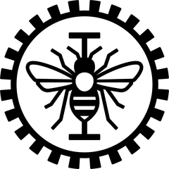

<!doctype html>
<html lang="en">
<head>
<meta charset="utf-8">
<meta name="viewport" content="width=device-width, initial-scale=1">
<title>Cap-free TAGI</title>
<!--
  Web version of the cap-free seminar, in the Dresden/beetle frame of capfree_seminar.tex.
  Toy part: the network stays on the left (one linear layer, three inputs, three examples); the right side changes step by step.
  Files: talk_data.js (python3 web/build_talk_data.py), fonts/ (Latin Modern Sans, as Beamer), vendor/ (MathJax, offline).
  Keys: → Space PageDown next · ← PageUp back · Home End · F full screen · T every toy number · Esc close. Drag a 3D plot to turn it.
-->
<style>
@font-face { font-family: "LM Sans"; src: url(fonts/lmsans10-regular.otf); }
@font-face { font-family: "LM Sans"; font-weight: 700; src: url(fonts/lmsans10-bold.otf); }
@font-face { font-family: "LM Sans"; font-style: italic; src: url(fonts/lmsans10-oblique.otf); }
:root {
  /* beamer beetle: palette primary 64,80,127; secondary 95% of it; tertiary 90% */
  --beetle: #40507f; --beetle2: #3d4c79; --beetle3: #3a4872;
  /* plotting_style.md, same as the \definecolor block of the .tex */
  --ink: #0b0b0b; --ink2: #52514e; --grid: #e4e3df; --bg: #fcfcfb; --muted: #b9b8b4;
  --ours: #4a3aa7; --ours2: #9b91d6; --base: #eb6834; --base2: #f2a27f; --ref: #2a78d6;
  color-scheme: light;
}
html, body { margin: 0; height: 100%; background: #111; overflow: hidden; }
#deck { position: absolute; left: 50%; top: 50%; width: 1280px; height: 720px; margin: -360px 0 0 -640px;
  background: #fff; color: #000; font-family: "LM Sans", "Latin Modern Sans", "CMU Sans Serif", sans-serif; font-size: 24px; line-height: 1.25;
  overflow: hidden; transform-origin: 50% 50%; }

/* ---- Dresden headline: sections with mini-frames, then the subsection ---- */
#nav { position: absolute; left: 0; right: 0; top: 0; height: 70px; color: #fff; font-size: 13px; }
#nav .r1 { height: 45px; background: var(--beetle3); display: flex; justify-content: space-between; padding: 0 24px; }
#nav .r2 { height: 25px; background: var(--beetle2); padding: 0 24px; line-height: 25px; display: flex; justify-content: space-between; }
#scen { font-size: 13px; opacity: .85; } #scen b { font-weight: 400; cursor: pointer; padding: 1px 7px; border-radius: 3px; }
#scen b.on { background: #fff; color: var(--beetle); opacity: 1; }
.sec { padding-top: 7px; opacity: .5; cursor: pointer; }
.sec.cur { opacity: 1; }
.mini { display: flex; gap: 3px; margin-top: 3px; }
.mini i { width: 7px; height: 7px; border-radius: 50%; border: 1px solid #fff; box-sizing: border-box; cursor: pointer; }
.mini i.cur { background: #fff; }
/* ---- footline ---- */
#foot { position: absolute; left: 0; right: 0; bottom: 0; height: 56px; color: #fff; font-size: 13px; }
#foot div { height: 28px; line-height: 28px; padding: 0 24px; display: flex; justify-content: space-between; }
#foot .f1 { background: var(--beetle2); } #foot .f2 { background: var(--beetle3); }
#foot u { text-underline-offset: 2px; }
#foot .inst { display: flex; align-items: center; gap: 7px; }
#foot .inst img { height: 19px; width: auto; }

/* ---- frames ---- */
.frame { position: absolute; left: 0; right: 0; top: 70px; bottom: 56px; visibility: hidden; }
.frame.on { visibility: visible; }
.ftitle { position: absolute; left: 26px; right: 26px; top: 20px; font-size: 31px; font-weight: 400; margin: 0; line-height: 1.1; }
.fb { position: absolute; left: 34px; right: 34px; top: 70px; bottom: 24px; display: flex; flex-direction: column; justify-content: center; }
.notitle .fb { top: 14px; }
.source { position: absolute; right: 26px; bottom: 5px; font-size: 13px; color: #808080; }
.cols { display: grid; grid-template-columns: var(--l, 1fr) var(--r, 1fr); gap: 28px; align-items: center; }
.center { text-align: center; }
.small { font-size: 25px; } .fn { font-size: 22px; } .sc { font-size: 19px; } .tiny { font-size: 15px; color: var(--ink2); }
p { margin: 0 0 10px; }
.plot { max-width: 100%; height: auto; display: block; overflow: visible; }
.rot { cursor: grab; touch-action: none; } .rot:active { cursor: grabbing; }
svg text { font-family: "LM Sans", sans-serif; }
mjx-container[display="true"] { margin: 6px 0 !important; }
.c-base { color: var(--base); } .c-ref { color: var(--ref); } .c-ours { color: var(--ours); } .c-ink2 { color: var(--ink2); }

/* toy frames: the network on the left, the stage on the right */
.toy .fb { justify-content: flex-start; }
.split { display: grid; grid-template-columns: 340px 1fr; gap: 22px; height: 100%; }
.split .left { border-right: 1px solid var(--grid); padding-right: 10px; display: flex; flex-direction: column; justify-content: center; }
.split .right { display: flex; flex-direction: column; justify-content: center; min-width: 0; }
.split .right > .plot { width: 100% !important; }
.say { font-size: 24px; line-height: 1.3; }
.say p { margin: 0 0 6px; }

/* builds: data-s="k" uncovers from step k (space kept, like \uncover); data-o="k", "k-", "k-m" shows only then (like \only) */
[data-s] { transition: opacity .3s; }
.hid { opacity: 0; visibility: hidden; }
.gone { display: none !important; }

table.bt { border-collapse: collapse; font-variant-numeric: tabular-nums; margin: 0 auto; }
table.bt th, table.bt td { padding: 3px 14px; text-align: left; }
table.bt thead tr { border-top: 2px solid #000; border-bottom: 1px solid #000; }
table.bt tbody tr:last-child { border-bottom: 2px solid #000; }
table.bt td.n, table.bt th.n { text-align: right; }

.pipe { display: flex; align-items: center; gap: 10px; justify-content: center; }
.pipe .st { width: 236px; min-height: 150px; border: 1.5px solid #a9a8a5; background: #f4f4f2; border-radius: 4px;
  display: flex; flex-direction: column; align-items: center; justify-content: center; text-align: center; font-size: 21px; padding: 8px; box-sizing: border-box; }
.pipe .st b { display: block; margin-bottom: 6px; }
.pipe .st.new { border-color: var(--ours); background: #ece9f8; }
.pipe .ar { color: var(--ink2); font-size: 22px; }
.braces { display: grid; grid-template-columns: 3fr 2fr; margin: 8px auto 0; width: 1110px; font-size: 20px; text-align: center; }
.braces div { border-top: 2px solid var(--ink2); margin: 0 14px; padding-top: 4px; }
.braces div.o { border-color: var(--ours); color: var(--ours); }

#ledger { position: absolute; inset: 70px 0 56px 0; background: rgba(255,255,255,.97); display: none; padding: 14px 30px; box-sizing: border-box; overflow: auto; font-size: 15px; z-index: 5; }
#ledger.on { display: block; }
#ledger h3 { font-size: 22px; font-weight: 400; margin: 0 0 8px; }
@media (prefers-reduced-motion: reduce) { [data-s] { transition: none; } }
</style>
<script>
window.MathJax = {
  tex: { inlineMath: [["\\(", "\\)"]], displayMath: [["\\[", "\\]"]],
    macros: { bS: "\\mathbf S", bu: "\\mathbf u", br: "\\mathbf r", bJ: "\\mathbf J", tB: "\\mathtt B", tK: "\\mathtt K", tP: "\\mathtt P",
      T: "^{\\mathsf T}", N: "\\mathcal N", bA: "\\boldsymbol\\Sigma^{\\theta}_{\\mathbf Z}", Sth: "\\boldsymbol\\Sigma_{\\boldsymbol\\theta}",
      mth: "\\boldsymbol\\mu_{\\boldsymbol\\theta}", clip: "\\operatorname{clip}", Var: "\\operatorname{var}", E: "\\mathbb E" } },
  svg: { fontCache: "none" },
  startup: { typeset: false }
};
</script>
<script src="vendor/tex-svg-full.js" defer></script>
<script src="talk_data.js"></script>
</head>
<body>
<div id="deck">
  <header id="nav"><div class="r1" id="secs"></div><div class="r2"><span id="subsec"></span><span id="scen"></span></div></header>
  <main id="frames"></main>
  <div id="ledger"></div>
  <footer id="foot">
    <div class="f1"><span><u>Miquel Florensa-Montilla</u>, James-A. Goulet, Guillaume-Alexandre Bilodeau, Luong-Ha Nguyen</span><span class="inst">Polytechnique Montréal</span></div>
    <div class="f2"><span>Cap-free TAGI</span><span id="pageno"></span></div>
  </footer>
</div>

<script>
"use strict";
const D = window.TALK_DATA, M = D.macros;

// =====================================================================
// The toy: one linear layer Z = θ1 A1 + θ2 A2 + θ3 A3, three Gaussian weights with prior 𝒩(0, 0.04),
// B = 3 similar examples. Every toy number on the slides is computed here.
// =====================================================================
// Three scenarios of the same toy (same prior, noise and cap); only the inputs and targets change. Key 1/2/3 or the header switch.
const SCENARIOS = [
  { name: "similar", A: [[1.0, 0.5, 0.2], [0.8, 0.6, 0.3], [0.6, 0.2, 0.5]], y: [1.0, 0.8, 0.6] },
  { name: "independent", A: [[1.0, 0.0, 0.0], [0.0, 1.0, 0.0], [0.0, 0.0, 1.0]], y: [1.0, 0.8, 0.6] },
  { name: "identical", A: [[1.0, 0.5, 0.2], [1.0, 0.5, 0.2], [1.0, 0.5, 0.2]], y: [1.0, 1.0, 1.0] },
  { name: "conflicting", A: [[1.0, 0.5, 0.2], [1.0, 0.5, 0.2], [1.0, 0.5, 0.2]], y: [1.0, -1.0, 1.0] },
];
function makeToy(sc) {
  const P = 3, B = 3;
  const mw = [0, 0, 0], vw = [0.04, 0.04, 0.04];
  const A = sc.A, vA = 0.01;
  const y = sc.y, sv2 = 0.02, c = 2;
  const I = [...Array(P).keys()], E = [...Array(B).keys()];
  const dot = (a, b) => a.reduce((t, v, i) => t + v * b[i], 0), len = v => Math.hypot(...v);
  const mz = A.map(a => dot(a, mw));
  const nu = A.map(a => I.reduce((t, i) => t + vw[i] * a[i] ** 2, 0));
  const psi = A.map(() => I.reduce((t, i) => t + (vw[i] + mw[i] ** 2) * vA, 0));
  const vz = nu.map((n, b) => n + psi[b]);
  const r = y.map((v, b) => v - mz[b]);
  const u = r.map((v, b) => v / (vz[b] + sv2));
  const step = A.map((a, b) => I.map(i => vw[i] * a[i] * u[b]));
  const dsum = I.map(i => step.reduce((t, d) => t + d[i], 0));
  // S = J Σθ Jᵀ + diag(ψ) + σv² I
  const Am = A.map(a => A.map(q => I.reduce((t, i) => t + vw[i] * a[i] * q[i], 0)));
  const S = Am.map((row, i) => row.map((v, j) => v + (i === j ? psi[i] + sv2 : 0)));
  const solve = (Mx, v) => { const n = v.length, a = Mx.map((row, i) => [...row, v[i]]);
    for (let i = 0; i < n; i++) { let p = i; for (let k = i + 1; k < n; k++) if (Math.abs(a[k][i]) > Math.abs(a[p][i])) p = k; [a[i], a[p]] = [a[p], a[i]];
      for (let k = i + 1; k < n; k++) { const f = a[k][i] / a[i][i]; for (let j = i; j <= n; j++) a[k][j] -= f * a[i][j]; } }
    const x = Array(n).fill(0); for (let i = n - 1; i >= 0; i--) { let t = a[i][n]; for (let j = i + 1; j < n; j++) t -= a[i][j] * x[j]; x[i] = t / a[i][i]; } return x; };
  const us = solve(S, r);
  const dex = I.map(i => vw[i] * A.reduce((t, a, b) => t + a[i] * us[b], 0));
  const moved = A.map(a => dot(a, dsum)), movedEx = A.map(a => dot(a, dex));
  const selfMove = nu.map((n, b) => n * u[b]), others = moved.map((m, b) => m - selfMove[b]);
  const noise = u.map((v, b) => (psi[b] + sv2) * v), noiseEx = us.map((v, b) => (psi[b] + sv2) * v);
  const acc = moved.map((m, b) => m + noise[b]), ratio = acc.map((v, b) => v / r[b]);
  const ru = dot(r, u), wts = u.map((v, b) => v * r[b] / ru);
  const qTerms = dsum.map((d, i) => d * d / vw[i]), Q = qTerms.reduce((a, b) => a + b, 0);
  const nPsi = u.reduce((t, v, b) => t + psi[b] * v * v, 0), nSv = u.reduce((t, v) => t + sv2 * v * v, 0);
  const uSu = Q + nPsi + nSv, kappa = uSu / ru, alpha = 1 / kappa;
  const dcf = dsum.map(d => alpha * d), movedCf = A.map(a => dot(a, dcf));
  const bar = vw.map(v => Math.sqrt(v) / c);
  const dcap = dsum.map((d, i) => Math.max(-bar[i], Math.min(bar[i], d))), movedCap = A.map(a => dot(a, dcap));
  const over = len(dsum) / len(dex);
  const angle = (a, b) => Math.acos(dot(a, b) / (len(a) * len(b))) * 180 / Math.PI;
  // overlap of two examples' steps: cosine in whitened parameters (as the MNIST maps)
  const wh = step.map(d => d.map((v, i) => v / Math.sqrt(vw[i])));
  const cos = wh.map(a => wh.map(q => dot(a, q) / (len(a) * len(q) || 1)));
  // B = 1: one TAGI update per example, in sequence (diagonal posterior carried from one to the next)
  const seq = [[0, 0, 0]], seqV = [[...vw]]; { let m = [...mw], v = [...vw];
    for (let b = 0; b < B; b++) {
      const a = A[b], n = I.reduce((t, i) => t + v[i] * a[i] ** 2, 0), p = I.reduce((t, i) => t + (v[i] + m[i] ** 2) * vA, 0);
      const den = n + p + sv2, ub = (y[b] - dot(a, m)) / den;
      m = m.map((mi, i) => mi + v[i] * a[i] * ub); v = v.map((vi, i) => vi - vi * vi * a[i] ** 2 / den);
      seq.push(m.map((mi, i) => mi - mw[i])); seqV.push([...v]);
    } }
  // variances
  const s = vz.map(v => 1 / (v + sv2));
  const dvs = I.map(i => -(vw[i] ** 2) * A.reduce((t, a, b) => t + a[i] ** 2 * s[b], 0));
  const vsum = vw.map((v, i) => v + dvs[i]);
  const Sinv = E.map(j => solve(S, E.map(k => (k === j ? 1 : 0))));
  const vex = I.map(i => { let t = 0; for (const b of E) for (const k of E) t += A[b][i] * Sinv[k][b] * A[k][i]; return vw[i] - vw[i] ** 2 * t; });
  const sumA2 = I.map(i => A.reduce((t, a) => t + a[i] ** 2, 0));
  const floor = vw.map((v, i) => 1 / (1 / v + sumA2[i] / sv2));
  const vcf = vsum.map((v, i) => Math.max(v, floor[i]));
  // F(u) = ½ uᵀSu − rᵀu along TAGI's direction, and at the exact message
  const F = a => 0.5 * a * a * uSu - a * ru, Fstar = -0.5 * dot(r, us);
  // own: standardized squared residuals; overlap: inner products of two examples' updates in units of σθ
  const z2 = r.map((v, b) => v * v / (vz[b] + sv2)), own = z2.reduce((a, b) => a + b, 0);
  const G = step.map(d => step.map(q => I.reduce((t, i) => t + d[i] * q[i] / vw[i], 0)));
  const overlap = G.reduce((t, row, i) => t + row.reduce((s, v, j) => s + (i === j ? 0 : v), 0), 0);
  // cuTAGI on variances: the summed decrement clipped to ±σθ/c, and reset to 1e-5 at or below 0
  const else0 = vz[0] + sv2 - vw[0] * A[0][0] ** 2, info0 = A[0][0] ** 2 / else0;
  // the fix (backup slide): line search on the parameter step. β = Σ r m/R / (Q + Σ m²/R), m = how far the summed step moves each output, R = ψ + σV²
  const Rn = psi.map(v => v + sv2), beta = moved.reduce((t, m, b) => t + r[b] * m / Rn[b], 0) / (Q + moved.reduce((t, m, b) => t + m * m / Rn[b], 0));
  const dbeta = dsum.map(d => beta * d), errTo = d => len(d.map((v, i) => v - dex[i])) / len(dex);
  const vcap = vw.map((v, i) => { const x = v + Math.max(-bar[i], Math.min(bar[i], dvs[i])); return x > 0 ? x : 1e-5; });
  const add = (a, b) => a.map((v, i) => v + b[i]);
  return { P, B, I, E, mw, vw, A, vA, y, sv2, c, mz, nu, psi, vz, r, u, step, dsum, Am, S, us, dex, moved, movedEx, selfMove, others,
    noise, noiseEx, acc, ratio, ru, wts, qTerms, Q, nPsi, nSv, uSu, kappa, alpha, dcf, movedCf, bar, dcap, movedCap, over, angle, cos,
    seq, seqV, dvs, vsum, vex, sumA2, floor, vcf, F, Fstar, len, add, dot, z2, own, G, overlap, vcap, else0, info0, beta, dbeta, errTo,
    // extent of the 3D box: the default [1.4, 0.8, 0.6], grown to hold every step of this scenario
    ext: [1.4, 0.8, 0.6].map((d, i) => Math.max(d, Math.ceil(1.1 * Math.max(dsum[i], dex[i], dcf[i], ...seq.map(q => q[i])) / 0.2 - 1e-9) * 0.2)) };
}
let SC = SCENARIOS[0], T = makeToy(SC);
// the comparison slides (variances, the limit) always show these, whatever the switch says
const FIX = { similar: makeToy(SCENARIOS[0]), identical: makeToy(SCENARIOS[2]), conflicting: makeToy(SCENARIOS[3]) };

// one formatter for every number on screen
const fx = (x, d = 2) => { const v = Math.abs(x) < 0.5 * 10 ** -d ? 0 : x; return v.toFixed(d); };
const fu = (x, d = 2) => fx(x, d).replace("-", "−");
const pct = x => Math.round(100 * x) + "%";
const vec = (v, d = 2) => "(" + v.map(x => fx(x, d)).join(",\\ ") + ")";
const vecU = (v, d = 2) => "(" + v.map(x => fu(x, d)).join(", ") + ")";

// =====================================================================
// SVG primitives, in the TAGI plotting style
// =====================================================================
const C = { ink: "#0b0b0b", ink2: "#52514e", grid: "#e4e3df", bg: "#fcfcfb", muted: "#b9b8b4",
  ours: "#4a3aa7", ours2: "#9b91d6", base: "#eb6834", base2: "#f2a27f", ref: "#2a78d6",
  ramp: ["#86b6ef", "#5598e7", "#2a78d6", "#1c5cab", "#0d366b"] };
const ease = t => t < .5 ? 4 * t * t * t : 1 - Math.pow(-2 * t + 2, 3) / 2;
const lerp = (a, b, t) => a + (b - a) * t;
const lerpV = (a, b, t) => a.map((v, i) => lerp(v, b[i], t));
const sb = s => `<tspan font-size=".72em" dy=".3em">${s}</tspan><tspan dy="-.3em"></tspan>`;   // SVG subscript
const FS = 1.2;   // plot labels: one factor for all, so they read from the back of the room
const txtPlain = (x, y, s, o = {}) => `<text x="${x}" y="${y}" fill="${o.col || C.ink2}" font-size="${FS * (o.size || 15)}" text-anchor="${o.anchor || "start"}"${o.weight ? ` font-weight="${o.weight}"` : ""}${o.op !== undefined ? ` opacity="${o.op}"` : ""}${o.rot ? ` transform="rotate(${o.rot} ${x} ${y})"` : ""}>${s}</text>`;
// Labels in plots: plain text, with $…$ typeset by MathJax (TeX → SVG, Computer Modern), as in the slides' formulas.
let mjReady = false;
const texCache = new Map(), measure = document.createElement("canvas").getContext("2d");
function texBox(tex) {
  if (!texCache.has(tex)) { const e = MathJax.tex2svg(tex, { display: false }).querySelector("svg");
    texCache.set(tex, { vb: e.getAttribute("viewBox").split(/\s+/).map(Number), inner: e.innerHTML }); }
  return texCache.get(tex);
}
function txt(x, y, str, o = {}) {
  str = String(str); x = +x; y = +y;
  if (!str.includes("$")) return txtPlain(x, y, str, o);
  const size = FS * (o.size || 15), col = o.col || C.ink2, parts = str.split(/\$([^$]+)\$/);
  if (!mjReady) return txtPlain(x, y, parts.map((q, i) => i % 2 ? q.replace(/\\[a-zA-Z]+|[{}^_]/g, "") : q).join(""), o);   // before MathJax loads
  measure.font = `${o.weight || 400} ${size}px "LM Sans"`;
  const segs = parts.map((q, i) => i % 2 === 0 ? { text: q, w: measure.measureText(q).width } : (b => ({ b, w: b.vb[2] / 1000 * size }))(texBox(q)));
  const W = segs.reduce((t, q) => t + q.w, 0);
  let cx = x - (o.anchor === "middle" ? W / 2 : o.anchor === "end" ? W : 0), g = "";
  for (const q of segs) {
    if (q.b) { const [, vy, vw, vh] = q.b.vb;
      g += `<svg x="${cx.toFixed(1)}" y="${(y + vy / 1000 * size).toFixed(1)}" width="${(vw / 1000 * size).toFixed(1)}" height="${(vh / 1000 * size).toFixed(1)}" viewBox="${q.b.vb.join(" ")}" overflow="visible" style="color:${col}">${q.b.inner}</svg>`; }
    else if (q.text) g += `<text x="${cx.toFixed(1)}" y="${y}" fill="${col}" font-size="${size}" style="white-space:pre"${o.weight ? ` font-weight="${o.weight}"` : ""}>${q.text}</text>`;
    cx += q.w;
  }
  return `<g${o.rot ? ` transform="rotate(${o.rot} ${x} ${y})"` : ""}${o.op !== undefined ? ` opacity="${o.op}"` : ""}>${g}</g>`;
}
const ln = (x1, y1, x2, y2, col, w = 1, o = {}) => `<line x1="${x1}" y1="${y1}" x2="${x2}" y2="${y2}" stroke="${col}" stroke-width="${w}"${o.dash ? ` stroke-dasharray="${o.dash}"` : ""}${o.op !== undefined ? ` opacity="${o.op}"` : ""}/>`;
const rect = (x, y, w, h, col, o = {}) => `<rect x="${x}" y="${y}" width="${Math.max(0, w)}" height="${Math.max(0, h)}" fill="${col}"${o.op !== undefined ? ` fill-opacity="${o.op}"` : ""}${o.rx ? ` rx="${o.rx}"` : ""}${o.stroke ? ` stroke="${o.stroke}"` : ""}/>`;
const circ = (x, y, r, fill, o = {}) => `<circle cx="${x}" cy="${y}" r="${r}" fill="${fill}"${o.stroke ? ` stroke="${o.stroke}" stroke-width="${o.sw || 2}"` : ""}${o.op !== undefined ? ` opacity="${o.op}"` : ""}/>`;
const arrow = (x1, y1, x2, y2, col, w = 2, o = {}) => {
  const L = Math.hypot(x2 - x1, y2 - y1); if (L < 1) return "";
  const ux = (x2 - x1) / L, uy = (y2 - y1) / L, h = Math.min(L, 8 + 2.2 * w), bx = x2 - ux * h, by = y2 - uy * h, hw = h * .42;
  return `<g${o.op !== undefined ? ` opacity="${o.op}"` : ""}><line x1="${x1}" y1="${y1}" x2="${bx}" y2="${by}" stroke="${col}" stroke-width="${w}"${o.dash ? ` stroke-dasharray="${o.dash}"` : ""}/>` +
    `<path d="M${x2},${y2} L${bx - uy * hw},${by + ux * hw} L${bx + uy * hw},${by - ux * hw} Z" fill="${col}"/></g>`;
};
const star = (x, y, col, R = 9) => { let d = ""; for (let k = 0; k < 10; k++) { const a = -Math.PI / 2 + k * Math.PI / 5, rr = k % 2 ? R * .45 : R; d += (k ? "L" : "M") + (x + rr * Math.cos(a)).toFixed(1) + "," + (y + rr * Math.sin(a)).toFixed(1); } return `<path d="${d}Z" fill="${col}"/>`; };

// Axes: o = {x, y, w, h, xr, yr, xlog, ylog, xrev, xt, yt, xfmt, yfmt, xl, yl, ylo, xgrid, ygrid}
function axes(o) {
  const tr = (v, log) => log ? Math.log(v) : v;
  const [xa, xb] = o.xr.map(v => tr(v, o.xlog)), [ya, yb] = o.yr.map(v => tr(v, o.ylog));
  const X = v => { const p = (tr(v, o.xlog) - xa) / (xb - xa); return o.x + (o.xrev ? 1 - p : p) * o.w; };
  const Y = v => o.y + o.h - (tr(v, o.ylog) - ya) / (yb - ya) * o.h;
  let g = rect(o.x, o.y, o.w, o.h, C.bg);
  const xf = o.xfmt || (v => v), yf = o.yfmt || (v => v);
  for (const v of o.xt || []) { if (o.xgrid !== false) g += ln(X(v), o.y, X(v), o.y + o.h, C.grid, 1); g += ln(X(v), o.y + o.h, X(v), o.y + o.h + 5, C.ink2) + txt(X(v), o.y + o.h + 20, xf(v), { anchor: "middle", size: 14 }); }
  for (const v of o.yt || []) { if (o.ygrid !== false) g += ln(o.x, Y(v), o.x + o.w, Y(v), C.grid, 1); g += ln(o.x - 5, Y(v), o.x, Y(v), C.ink2) + txt(o.x - 9, Y(v) + 5, yf(v), { anchor: "end", size: 14 }); }
  g += ln(o.x, o.y + o.h, o.x + o.w, o.y + o.h, C.ink2) + ln(o.x, o.y, o.x, o.y + o.h, C.ink2);
  if (o.xl) g += txt(o.x + o.w / 2, o.y + o.h + 42, o.xl, { anchor: "middle", size: 16 });
  if (o.yl) g += txt(o.x - (o.ylo || 46), o.y + o.h / 2, o.yl, { anchor: "middle", size: 16, rot: -90 });
  return { X, Y, g };
}
const errpts = (ax, rows, xk, col, lo = r => r.lo, hi = r => r.hi) => {
  let g = `<path d="${rows.map((r, i) => (i ? "L" : "M") + ax.X(r[xk]) + "," + ax.Y(r.mean)).join("")}" fill="none" stroke="${col}" stroke-width="2.2"/>`;
  for (const r of rows) { const x = ax.X(r[xk]); g += ln(x, ax.Y(lo(r)), x, ax.Y(hi(r)), col, 1.4) + ln(x - 4, ax.Y(lo(r)), x + 4, ax.Y(lo(r)), col, 1.4) + ln(x - 4, ax.Y(hi(r)), x + 4, ax.Y(hi(r)), col, 1.4) + circ(x, ax.Y(r.mean), 4, col, { stroke: "#fff", sw: 1 }); }
  return g;
};

// ---------------------------------------------------------------------
// The network panel (left side of every toy frame).
// st = {ex: null | b | "all", mu, muFrom, v, vFrom, delta, dcol, terms, z: {m, v, u}, label}
// ---------------------------------------------------------------------
function net(st, t) {
  // drawn at 340 × 436, the size it is shown; text sizes are before the FS factor
  const k = ease(t), mu = st.muFrom ? lerpV(st.muFrom, st.mu, k) : (st.mu || T.mw), v = st.vFrom ? lerpV(st.vFrom, st.v, k) : (st.v || T.vw);
  const ix = 28, iy = [54, 112, 170], zx = 190, zy = 112, ex = st.ex, W = 338;
  let g = txt(2, 16, st.label || "prior: every weight $\\mathcal N(0,\\,0.04)$", { size: 14, col: C.ink });
  for (const i of T.I) {
    const w = 3 + 55 * Math.sqrt(Math.max(v[i], 0.0004));
    g += `<line x1="${ix}" y1="${iy[i]}" x2="${zx}" y2="${zy}" stroke="${C.ours2}" stroke-opacity=".3" stroke-width="${w}" stroke-linecap="round"/>` + ln(ix, iy[i], zx, zy, C.ink2, 1.4);
    g += txt(lerp(ix, zx, .45), lerp(iy[i], zy, .45) + (i === 1 ? -8 : i === 0 ? -10 : 21), `$\\theta_${i + 1}$`, { anchor: "middle", size: 15, col: C.ink });
  }
  for (const i of T.I) g += circ(ix, iy[i], 20, "#fff", { stroke: C.ink2, sw: 1.5 }) + txt(ix, iy[i] + 6, typeof ex === "number" ? fx(T.A[ex][i], 1) : `$A_${i + 1}$`, { anchor: "middle", size: 14, col: C.ink });
  g += circ(zx, zy, 24, "#fff", { stroke: C.ink, sw: 2 }) + txt(zx, zy + 7, "$Z$", { anchor: "middle", size: 18, col: C.ink });
  if (st.z) { let yy = zy - 30;
    for (const [lab, val, col, d] of [["\\mu_Z", st.z.m, C.ink, 2], ["\\sigma^2_Z", st.z.v, C.ours, 3], ["y", st.z.y, C.base, 2], ["\\sigma^2_Y", st.z.sy, C.ink2, 3]]) {
      if (val === undefined) continue; g += txt(zx + 30, yy, `$${lab}=${typeof val === "string" ? val : fx(val, d)}$`, { size: 14, col }); yy += 22; } }
  // the weights: mean, variance, and the step being applied
  const wy = 228, wx = [24, 102, 186, 282], extra = st.terms ? "$\\Delta\\mu_\\theta^2/\\sigma^2_\\theta$" : st.delta ? "step" : "";
  g += ln(0, wy - 19, W, wy - 19, C.ink, 1.5) + ["", "mean $\\mu_\\theta$", "var. $\\sigma^2_\\theta$", extra].map((h, j) => txt(wx[j], wy, h, { anchor: "middle", size: 14, col: j === 3 ? (st.dcol || C.base) : C.ink })).join("") + ln(0, wy + 8, W, wy + 8, C.ink, .8);
  T.I.forEach(i => { const yy = wy + 30 + i * 25;
    g += txt(wx[0], yy, `$\\theta_${i + 1}$`, { anchor: "middle", size: 14, col: C.ink }) + txt(wx[1], yy, fu(mu[i]), { anchor: "middle", size: 14, col: C.ink }) + txt(wx[2], yy, fu(v[i], 3), { anchor: "middle", size: 14, col: C.ink });
    if (st.terms) g += txt(wx[3], yy, st.terms[i], { anchor: "middle", size: 14, col: st.dcol || C.base });
    else if (st.delta) g += txt(wx[3], yy, (st.delta[i] >= 0 ? "+" : "−") + fx(Math.abs(st.delta[i])), { anchor: "middle", size: 14, col: st.dcol || C.base }); });
  // the three examples
  const ty = 342, cx = [24, 96, 152, 208, 290];
  g += ln(0, ty - 19, W, ty - 19, C.ink, 1.5) + ["", "$A_1$", "$A_2$", "$A_3$", "target $y$"].map((h, j) => txt(cx[j], ty, h, { anchor: "middle", size: 14, col: C.ink })).join("") + ln(0, ty + 8, W, ty + 8, C.ink, .8);
  T.E.forEach(b => {
    const yy = ty + 30 + b * 25, on = ex === "all" || ex === b;
    if (on) g += rect(0, yy - 19, W, 25, ex === "all" ? C.base2 : C.ours2, { op: ex === "all" ? .18 : .3 });
    g += txt(cx[0], yy, `ex ${b + 1}`, { anchor: "middle", size: 14, col: on ? C.ink : C.ink2 });
    T.I.forEach(i => { g += txt(cx[i + 1], yy, fx(T.A[b][i], 1), { anchor: "middle", size: 14, col: on ? C.ink : C.ink2 }); });
    g += txt(cx[4], yy, fx(T.y[b], 1), { anchor: "middle", size: 14, col: on ? C.ink : C.ink2 });
  });
  return g + ln(0, ty + 96, W, ty + 96, C.ink, 1.5);
}

// ---------------------------------------------------------------------
// The 3D parameter space: the step of the three weight means. Drag to turn.
// ---------------------------------------------------------------------
const V3 = { yaw: -0.32, pitch: 0.42 }, V3fit = {};
function space(W, H, items) {
  const rot = (p, yaw, pitch) => { const xr = p[0] * Math.cos(yaw) - p[1] * Math.sin(yaw), yr = p[0] * Math.sin(yaw) + p[1] * Math.cos(yaw);
    return [xr, -(p[2] * Math.cos(pitch) + yr * Math.sin(pitch))]; };
  // fit the box [0,ex]×[0,ey]×[0,ez] (with room for labels) at the starting view, then turn about its centre at that scale
  const [ex, ey, ez] = T.ext, c = [ex / 2, ey / 2, ez / 2], key = W + "x" + H + ":" + T.ext.join(",");
  if (!V3fit[key]) {
    const cs = []; for (const x of [0, ex * 1.11]) for (const y of [0, ey * 1.12]) for (const z of [0, ez * 1.1]) cs.push(rot([x - c[0], y - c[1], z - c[2]], V3.yaw, V3.pitch));
    const xs = cs.map(q => q[0]), ys = cs.map(q => q[1]), sc = Math.min((W - 70) / (Math.max(...xs) - Math.min(...xs)), (H - 34) / (Math.max(...ys) - Math.min(...ys)));
    V3fit[key] = { sc, ox: W / 2 - sc * (Math.max(...xs) + Math.min(...xs)) / 2, oy: H / 2 - sc * (Math.max(...ys) + Math.min(...ys)) / 2 + 4 };
  }
  const { sc, ox, oy } = V3fit[key];
  const P = p => { const q = rot([p[0] - c[0], p[1] - c[1], p[2] - c[2]], V3.yaw, V3.pitch); return [ox + sc * q[0], oy + sc * q[1]]; };
  const L3 = (a, b, col, w = 1, o = {}) => { const [x1, y1] = P(a), [x2, y2] = P(b); return ln(x1.toFixed(1), y1.toFixed(1), x2.toFixed(1), y2.toFixed(1), col, w, o); };
  const A3 = (a, b, col, w = 2.4, o = {}) => { const [x1, y1] = P(a), [x2, y2] = P(b); return arrow(x1, y1, x2, y2, col, w, o); };
  const T3 = (p, s, o = {}) => { const [x, y] = P(p); return txt((x + (o.dx || 0)).toFixed(1), (y + (o.dy || 0)).toFixed(1), s, o); };
  const drop = (p, col) => L3(p, [p[0], p[1], 0], col, 1, { dash: "3 3", op: .7 }) + (([x, y]) => `<ellipse cx="${x}" cy="${y}" rx="4" ry="2" fill="${col}" opacity=".4"/>`)(P([p[0], p[1], 0]));
  const api = { P, L3, A3, T3, drop,
    pt: (p, col, r = 4.5) => (([x, y]) => circ(x, y, r, col))(P(p)),
    star: (p, col, R = 11) => (([x, y]) => star(x, y, col, R))(P(p)) };
  let g = `<rect x="0" y="0" width="${W}" height="${H}" fill="transparent"/>`;
  // floor grid and axes
  for (let x = 0; x <= ex + 1e-9; x += 0.2) g += L3([x, 0, 0], [x, ey, 0], C.grid, 1);
  for (let y = 0; y <= ey + 1e-9; y += 0.2) g += L3([0, y, 0], [ex, y, 0], C.grid, 1);
  g += L3([0, ey, 0], [0, ey, ez], C.grid, 1) + L3([ex, ey, 0], [ex, ey, ez], C.grid, 1) + L3([0, ey, ez], [ex, ey, ez], C.grid, 1);
  g += L3([0, 0, 0], [ex + 0.05, 0, 0], C.ink2, 1.3) + L3([0, 0, 0], [0, ey + 0.05, 0], C.ink2, 1.3) + L3([0, 0, 0], [0, 0, ez + 0.02], C.ink2, 1.3);
  for (let v = 0.5; v <= ex + 1e-9; v += 0.5) g += T3([v, 0, 0], fx(v, 1), { anchor: "middle", size: 12, dy: 16 });
  for (let v = 0.4; v <= ey + 1e-9; v += 0.4) g += T3([0, v, 0], fx(v, 1), { anchor: "end", size: 12, dx: -6, dy: 4 });
  for (let v = 0.2; v <= ez - 0.1; v += 0.2) g += T3([0, 0, v], fx(v, 1), { anchor: "end", size: 12, dx: -6, dy: 4 });
  g += T3([ex + 0.1, 0, 0], "$\\Delta\\mu_{\\theta_1}$", { size: 17, col: C.ink, dy: 6 }) + T3([0, ey + 0.1, 0], "$\\Delta\\mu_{\\theta_2}$", { size: 17, col: C.ink, dx: -10 }) + T3([0, 0, ez + 0.06], "$\\Delta\\mu_{\\theta_3}$", { size: 17, col: C.ink, anchor: "middle" });
  g += api.pt([0, 0, 0], C.ink, 5) + T3([0, 0, 0], "prior", { anchor: "end", size: 14, col: C.ink, dx: -8, dy: 16 });
  return g + items(api);
}

// Three outputs as number lines (prior prediction 0 for every example). draw(b, X, yy) adds the moves.
function outputs(W, H, draw) {
  const vmax = Math.max(1.8, 1.08 * Math.max(...T.moved, ...T.movedCf, ...T.y)), vmin = Math.min(0, 1.08 * Math.min(...T.moved, ...T.movedCf, ...T.y));
  const X = v => 96 + (v - vmin) * 666 / (vmax - vmin), rows = [44, 44 + (H - 60) / 3, 44 + 2 * (H - 60) / 3];
  let g = "";
  for (const b of T.E) {
    const yy = rows[b];
    g += txt(4, yy + 5, `output ${b + 1}`, { col: C.ink, size: 16 });
    g += ln(X(vmin), yy, X(vmax), yy, C.ink2);
    for (let v = Math.ceil(vmin / 0.5) * 0.5; v <= vmax + 1e-9; v += 0.5) g += ln(X(v), yy - 4, X(v), yy + 4, C.ink2);
    g += ln(X(T.y[b]), yy - 18, X(T.y[b]), yy + 8, C.ink, 2.5) + txt(X(T.y[b]), yy + 24, `target ${fx(T.y[b], 1)}`, { anchor: "middle", size: 14, col: C.ink });
    g += circ(X(T.mz[b]), yy, 5.5, C.ink2);
    g += draw(b, X, yy);
  }
  return g;
}

// MNIST overlap map: cosine between the steps of two examples, 16 probe digits.
const RDBU = [[5, 48, 97], [67, 147, 195], [209, 229, 240], [247, 247, 247], [253, 219, 199], [214, 96, 77], [103, 0, 31]];
const rdbu = v => { const p = (Math.max(-1, Math.min(1, v)) + 1) / 2 * 6, i = Math.min(5, Math.floor(p)), f = p - i; return `rgb(${RDBU[i].map((a, k) => Math.round(lerp(a, RDBU[i + 1][k], f)))})`; };
function heat(tag, size, thumbs, x0 = 0, y0 = 0) {
  const pad = thumbs ? size * 0.075 : 0, cs = (size - pad) / 16; let g = "";
  for (const e of D.dat["overlap_" + tag]) g += `<rect x="${(x0 + pad + e.c * cs).toFixed(2)}" y="${(y0 + pad + e.b * cs).toFixed(2)}" width="${(cs + .4).toFixed(2)}" height="${(cs + .4).toFixed(2)}" fill="${rdbu(e.cos)}"/>`;
  if (thumbs) for (let i = 0; i < 16; i++) {
    g += `<image href="${D.digits[i]}" x="${x0}" y="${y0 + pad + i * cs + cs * .05}" width="${cs * .9}" height="${cs * .9}"/>`;
    g += `<image href="${D.digits[i]}" x="${x0 + pad + i * cs + cs * .05}" y="${y0}" width="${cs * .9}" height="${cs * .9}"/>`;
  }
  return g;
}
const colorbar = (x, y, w) => { let g = `<defs><linearGradient id="cb${x}">${RDBU.map((c, i) => `<stop offset="${i / 6}" stop-color="rgb(${c})"/>`).join("")}</linearGradient></defs>`;
  g += `<rect x="${x}" y="${y}" width="${w}" height="10" fill="url(#cb${x})"/>`;
  for (const v of [-1, 0, 1]) g += ln(x + (v + 1) / 2 * w, y + 10, x + (v + 1) / 2 * w, y + 15, C.ink2) + txt(x + (v + 1) / 2 * w, y + 29, v, { anchor: "middle", size: 12 });
  return g + txt(x + w / 2, y + 46, "overlap of two steps (cosine)", { anchor: "middle", size: 13 }); };

// =====================================================================
// Frames. Each: sec, sub, title, steps, body (HTML; [data-s] / [data-o] builds), plots {id: (s, t, at) → svg}, source.
// Toy frames: toy: true, left: (s, t) → network state, viz: [id, w, h], say: HTML under the plot.
// In a plot, at(k) is how far build k has appeared: 0 before it, eased 0→1 while it animates, 1 after.
// =====================================================================
const F = [];
const frame = f => F.push(Object.assign({ steps: 1, plots: {} }, f));
const svg = (id, w, h, cls = "", dw = w) => `<svg class="plot ${cls}" data-plot="${id}" viewBox="0 0 ${w} ${h}" style="width:${dw}px;margin:0 auto"></svg>`;   // dw: shown width
const toySrc = () => `toy (${SC.name} examples): \\(Z=\\theta_1A_1+\\theta_2A_2+\\theta_3A_3\\), \\(\\sigma_V^2=0.02\\), \\(\\sigma_A=0.1\\), \\(\\mathtt B=3\\) · drag the 3D plot · T: every number`;
function toyFrame(f) {
  const [id, w, h, cls] = f.viz;
  frame(Object.assign({}, f, { toy: true, source: toySrc,
    body: () => `<div class="split"><div class="left">${svg("net", 340, 442)}</div><div class="right">${svg(id, w, h, cls || "")}<div class="say">${f.say()}</div></div></div>`,
    plots: Object.assign({ net: (s, t, at) => net(f.left(s, t, at), f.leftAnim && f.leftAnim(s) ? t : 1) }, f.plots) }));
}
let prior, afterSum, afterCf, afterEx;
function refreshDerived() { prior = { mu: T.mw, v: T.vw }; afterSum = T.add(T.mw, T.dsum); afterCf = T.add(T.mw, T.dcf); afterEx = T.add(T.mw, T.dex); }
refreshDerived();
const AX = (() => { const BK = 256 * 11; return { BK, matMB: BK * BK * 4 / 1e6 }; })();   // AlexNet, as in make_data.py: B = 256, K = 11, fp32

// ---- animation helpers ----
const clamp01 = x => Math.max(0, Math.min(1, x));
const pathD = pts => pts.map((p, i) => (i ? "L" : "M") + (+p[0]).toFixed(1) + "," + (+p[1]).toFixed(1)).join("");
// the first fraction k of a polyline, the last segment cut where k falls
const partial = (pts, k) => { if (k >= 1) return pts; const n = pts.length - 1, f = Math.max(0, k) * n, i = Math.floor(f), out = pts.slice(0, i + 1);
  if (i < n) out.push([lerp(pts[i][0], pts[i + 1][0], f - i), lerp(pts[i][1], pts[i + 1][1], f - i)]); return out; };
// error-bar series drawn on from left to right as k goes 0 → 1
function errptsK(ax, rows, xk, col, k, lo = r => r.lo, hi = r => r.hi) {
  if (k <= 0) return "";
  const pts = rows.map(r => [ax.X(r[xk]), ax.Y(r.mean)]), n = rows.length - 1;
  let g = `<path d="${pathD(partial(pts, k))}" fill="none" stroke="${col}" stroke-width="2.2"/>`;
  rows.forEach((r, i) => { if (n && i / n > k + 1e-9) return; const x = ax.X(r[xk]);
    g += ln(x, ax.Y(lo(r)), x, ax.Y(hi(r)), col, 1.4) + ln(x - 4, ax.Y(lo(r)), x + 4, ax.Y(lo(r)), col, 1.4) + ln(x - 4, ax.Y(hi(r)), x + 4, ax.Y(hi(r)), col, 1.4) + circ(x, ax.Y(r.mean), 4, col, { stroke: "#fff", sw: 1 }); });
  return g;
}
const bell = (cx, base, w, h, col, op = 1) => { let d = ""; for (let k = 0; k <= 60; k++) { const z = -3 + 6 * k / 60; d += (k ? "L" : "M") + (cx + z * w / 6).toFixed(1) + "," + (base - h * Math.exp(-z * z / 2)).toFixed(1); }
  return `<path d="${d}" fill="${col}" fill-opacity=".2" stroke="${col}" stroke-width="1.4" opacity="${op}"/>`; };

// ---- title ----
frame({ notitle: true, body: () => `
  <div class="center" style="margin-top:-10px">
    <div style="font-size:31px">Cap-free Batch Update for TAGI</div>
    <div style="font-size:22px;margin-top:8px">One step length, measured from the step itself</div>
    <div style="font-size:20px;margin-top:44px"><u>Miquel Florensa-Montilla</u>,<br>James-A. Goulet, Guillaume-Alexandre Bilodeau, Luong-Ha Nguyen</div>
    <div style="font-size:16px;margin-top:30px;display:flex;align-items:center;justify-content:center;gap:10px">Polytechnique Montréal, Canada</div>
    <div style="font-size:20px;margin-top:30px">October 29, 2026</div>
  </div>` });

// ================= PROBLEM, on the toy =================
toyFrame({ sec: "Problem", sub: "The toy", title: "A toy: one linear layer, three examples", steps: 2, viz: ["s0", 780, 330, "rot"],
  left: () => ({ ex: "all" }),
  say: () => String.raw`<p data-o="1">Three weights, each a Gaussian \(\N(0,\ 0.04)\).</p>
    <p data-o="2">An update moves the three means: one point in this space. The prior is the origin.</p>`,
  plots: { s0: (s, t, at) => { const k2 = at(2);
    let g = `<g opacity="${1 - k2}">` + T.I.map(i => bell(150 + i * 240, 220, 170, 120, C.ours) + ln(150 + i * 240, 224, 150 + i * 240, 214, C.ink2) + txt(150 + i * 240, 246, `$\\theta_${i + 1}\\sim\\mathcal N(0,\\,0.04)$`, { anchor: "middle", size: 17, col: C.ink })).join("") + `</g>`;
    return g + (k2 ? `<g opacity="${k2}">${space(780, 330, () => "")}</g>` : ""); } } });

toyFrame({ sec: "Problem", sub: "One example", title: "Example 1, forward: a prediction and its uncertainty", steps: 3, viz: ["z1", 780, 260],
  left: s => ({ ex: 0, label: "example 1 goes through the prior network", z: { m: T.mz[0], v: s >= 2 ? T.vz[0] : undefined, y: T.y[0], sy: s >= 3 ? T.vz[0] + T.sv2 : undefined } }),
  say: () => String.raw`<p data-o="1">Means multiply through: \(\mu_Z=\sum_i\mu_{\theta_i}\mu_{A_i}=${fx(T.mz[0])}\).</p>
    <p data-o="2">GMA: each product adds \(\ \sigma^2_\theta\mu^2_A+\sigma^2_\theta\sigma^2_A+\mu^2_\theta\sigma^2_A\ \) to the variance.</p>
    <p data-o="3">Add the noise, \(\sigma^2_Y=\sigma^2_Z+\sigma_V^2\).<br>Standardized residual: \((y-\mu_Y)/\sigma_Y=${fx(T.r[0])}/${fx(Math.sqrt(T.vz[0] + T.sv2), 3)}=${fx(T.r[0] / Math.sqrt(T.vz[0] + T.sv2), 1)}\): the target is ${fx(Math.abs(T.r[0]) / Math.sqrt(T.vz[0] + T.sv2), 1)} standard deviations away.</p>`,
  plots: { z1: (s, t, at) => {
    const k2 = at(2), k3 = at(3), X = v => 300 + v * 360, yy = 100;
    const vNow = s === 1 ? 0 : s === 2 ? k2 * T.vz[0] : T.vz[0] + k3 * T.sv2;
    let g = ln(X(-0.75), yy, X(1.15), yy, C.ink2);
    if (vNow > 1e-4) { const sd = Math.sqrt(vNow); let d = "";
      for (let k = 0; k <= 80; k++) { const v = Math.max(-0.74, Math.min(1.14, T.mz[0] - 3 * sd + 6 * sd * k / 80)); d += (k ? "L" : "M") + X(v).toFixed(1) + "," + (yy - 84 * Math.exp(-((v - T.mz[0]) ** 2) / (2 * vNow))).toFixed(1); }
      g += `<path d="${d}" fill="${C.ours2}" fill-opacity=".22" stroke="${C.ours}" stroke-width="1.3"/>` + txt(X(T.mz[0]) + 66, yy - 74, s >= 3 ? "$\\mathcal N(\\mu_Y,\\sigma^2_Y)$" : "$\\mathcal N(\\mu_Z,\\sigma^2_Z)$", { size: 16, col: C.ours }); }
    g += circ(X(T.mz[0]), yy, 5, C.ink2) + txt(X(T.mz[0]), yy + 22, `$\\mu_Z=${fx(T.mz[0])}$`, { anchor: "middle", size: 15 });
    g += circ(X(T.y[0]), yy, 6, C.base) + txt(X(T.y[0]), yy + 22, `target $y=${fx(T.y[0], 1)}$`, { anchor: "middle", size: 15, col: C.base });
    if (k3) g += `<g opacity="${k3}"><path d="M${X(T.mz[0])},${yy + 32} v6 H${X(T.y[0])} v-6" fill="none" stroke="${C.ink2}"/>` + txt((X(T.mz[0]) + X(T.y[0])) / 2, yy + 54, `$y-\\mu_Y=${fx(T.r[0])}$`, { anchor: "middle", size: 15 }) + `</g>`;
    if (s < 2) return g;
    // the bar fills term by term, at the pace the Gaussian widens
    const a = T.A[0], by = 184, bh = 28, B0 = 50, sc = 700 / (T.vz[0] + T.sv2);
    const segs = [...T.I.map(i => [T.vw[i] * a[i] ** 2, C.ours, .55 + .15 * i, `$\\sigma^2_{\\theta_${i + 1}}\\mu^2_{A_${i + 1}}=${fx(T.vw[i] * a[i] ** 2, 4)}$`]),
      ...T.I.map(i => [T.vw[i] * T.vA, C.ours2, .85, ""])];
    let x = B0, acc = 0; const drawn = s === 2 ? k2 * T.vz[0] : T.vz[0];
    segs.forEach(([v, col, op, lab], j) => { const w = Math.max(0, Math.min(v, drawn - acc)) * sc; acc += v;
      if (w > 0) g += rect(x, by, w, bh, col, { op }) + ln(x, by, x, by + bh, "#fff", 1.2);
      if (lab && v > 0 && w >= v * sc - .5) g += v * sc > 140 ? txt(x + v * sc / 2, by + 19, lab, { anchor: "middle", size: 14, col: "#fff" })
        : v * sc > 50 ? txt(x + v * sc / 2, by + 19, `$${fx(v, 4)}$`, { anchor: "middle", size: 13, col: "#fff" })
        : ln(x + v * sc / 2, by + bh, x + v * sc / 2, by + bh + 9, C.ink2) + txt(x + v * sc / 2 + 4, by + bh + 23, lab, { anchor: "end", size: 13 });
      x += v * sc; });
    if (drawn >= T.vz[0] - 1e-9) g += ln(x - 6, by + bh, x - 6, by + bh + 32, C.ink2) + txt(x - 2, by + bh + 46, `$\\sigma^2_{\\theta_i}\\sigma^2_{A_i}=${fx(T.vw[0] * T.vA, 4)}$ each, $\\ \\mu^2_{\\theta_i}\\sigma^2_{A_i}=0$`, { anchor: "end", size: 13 });
    if (k3) { const w = k3 * T.sv2 * sc; g += rect(x, by, w, bh, C.muted, { op: .9 }) + (k3 > .9 ? txt(x + w / 2, by + 19, `$\\sigma_V^2=${fx(T.sv2, 4)}$`, { anchor: "middle", size: 14, col: C.ink }) : ""); }
    g += txt(B0 - 6, by + 20, s >= 3 ? "$\\sigma^2_Y$" : "$\\sigma^2_Z$", { anchor: "end", size: 17, col: C.ink });
    return g;
  } } });

toyFrame({ sec: "Problem", sub: "One example", title: "Example 1, update: each weight moves by its covariance with the output", steps: 2, viz: ["s1", 780, 300, "rot"],
  left: s => ({ ex: 0, label: "after example 1", muFrom: s === 1 ? T.mw : undefined, mu: T.step[0], delta: T.step[0], dcol: C.ink2, z: { m: T.mz[0], y: T.y[0], sy: T.vz[0] + T.sv2 } }), leftAnim: s => s === 1,
  say: () => String.raw`<p>\(\displaystyle\Delta\mu_\theta=\frac{\operatorname{cov}(\theta,Z)}{\sigma^2_Y}\,(y-\mu_Y),\qquad \operatorname{cov}(\theta_i,\theta_iA_i)=\sigma^2_{\theta_i}\mu_{A_i}\ \text{(GMA)}\)</p>
    <p data-s="2">\(\Delta\mu_\theta=0.04\times${vec(T.A[0], 1)}\times\dfrac{${fx(T.r[0])}}{${fx(T.vz[0] + T.sv2, 4)}}=${vec(T.step[0])}\)</p>`,
  plots: { s1: (s, t, at) => space(780, 300, a => {
    // one weight at a time: along θ1, then θ2, then θ3; then the step itself
    const d = T.step[0], f = 3 * (s === 1 ? ease(t) : 1), P = [[0, 0, 0], [d[0], 0, 0], [d[0], d[1], 0], d];
    let g = "";
    for (let i = 0; i < 3; i++) { const k = clamp01(f - i); if (!k) break; g += a.A3(P[i], lerpV(P[i], P[i + 1], k), C.ours, 2.4);
      if (k > .95) g += a.T3(lerpV(P[i], P[i + 1], .5), `$${fx(d[i])}$`, { size: 15, col: C.ours, dx: i === 2 ? 8 : 0, dy: i === 2 ? 0 : 18, anchor: i === 2 ? "start" : "middle" }); }
    const k2 = at(2); if (k2) g += a.A3([0, 0, 0], d.map(v => v * k2), C.ink, 3) + (k2 > .9 ? a.drop(d, C.ink2) + a.T3(d, "example 1", { size: 15, col: C.ink, dx: 10, dy: -8 }) : "");
    return g; }) } });

toyFrame({ sec: "Problem", sub: "Batch", title: "A batch: update each example alone, then add the updates", steps: 3, viz: ["s3", 780, 300, "rot"],
  left: s => s === 1 ? { ex: "all", label: "each example alone, from the prior" } : { ex: "all", label: "after the summed batch step", muFrom: s === 2 ? T.mw : undefined, mu: afterSum, delta: T.dsum },
  leftAnim: s => s === 2,
  say: () => String.raw`<p data-o="1">Same rule for every example, all from the same prior: \(\Delta\mu^{(b)}_\theta=\frac{\operatorname{cov}(\theta,Z_b)}{\sigma^2_{Y_b}}(y_b-\mu_{Y_b})\).</p>
    <p data-o="2">TAGI adds them: \(\Delta\mu_\theta=\sum_b\Delta\mu^{(b)}_\theta=${vec(T.dsum)}\).</p>
    <p data-o="3"><span class="c-ref">Exact batch conditioning</span> lands next to one example at a time.<br>${T.over > 1.03 ? `<span class="c-base">The sum goes ${fx(T.over)}\\(\\times\\) too far.</span>` : "Here the sum is already exact: the examples share nothing."}</p>`,
  plots: { s3: (s, t, at) => space(780, 300, a => {
    let g = "";
    if (s === 1) { T.step.forEach((d, b) => { const k = ease(clamp01(t * 1.6 - b * .3)); g += a.A3([0, 0, 0], d.map(v => v * k), C.base2, 2.6);
      if (k > .95) g += a.T3(d, `ex ${b + 1}`, { size: 14, col: C.base, dx: 8, dy: -4 }); }); return g; }
    const k = s === 2 ? ease(t) : 1; let o = [0, 0, 0];
    T.step.forEach(d => { const from = o.map(v => v * k); g += a.A3(from, T.add(from, d), C.base2, 2); o = T.add(o, d); });
    if (k > .95) g += a.A3([0, 0, 0], T.dsum, C.base, 3, { dash: "8 5" }) + a.drop(T.dsum, C.base) + a.T3(T.dsum, "summed", { size: 15, col: C.base, dx: 8, dy: -8 });
    const k3 = at(3); if (k3) { const f = 3 * k3; for (let i = 0; i < 3; i++) { const q = clamp01(f - i); if (q) g += a.L3(T.seq[i], lerpV(T.seq[i], T.seq[i + 1], q), C.ink2, 1.6); }
      g += `<g opacity="${k3}">` + a.T3(T.seq[3], "one at a time", { size: 13, anchor: "end", dx: -12, dy: 28 }) + a.star(T.dex, C.ref) + a.drop(T.dex, C.ref) + a.T3(T.dex, "exact", { size: 15, col: C.ref, dx: 14, dy: 18 }) + `</g>`; }
    return g; }) } });

toyFrame({ sec: "Problem", sub: "Shared", title: "Why: TAGI's diagonal assumption drops what the outputs share", steps: 3, viz: ["Sy", 780, 250],
  left: () => ({ ex: "all", label: "all three examples, from the prior" }),
  say: () => String.raw`<p data-o="1">TAGI conditions each output alone: only the diagonal, \(\sigma^2_{Y_b}\).</p>
    <div data-o="2" style="margin-top:14px">Exact: the outputs covary through the shared weights
    \[ \operatorname{cov}(Z_b,Z_{b'})=\sum_\theta\frac{\operatorname{cov}(\theta,Z_b)\,\operatorname{cov}(\theta,Z_{b'})}{\sigma^2_\theta} \]</div>
    <p data-o="3">AlexNet, \(\tB=256\), \(\tK=11\): the matrix is small (\(${AX.BK}^2\) entries, ${fx(AX.matMB, 0)} MB), but each entry is a sum over all ${M.nalexP} M weights. Building it needs every output's covariance with every weight, \(\tB\tK\times\tP\) numbers: <b>${M.njacGB} GB</b> at every batch.</p>`,
  plots: { Sy: (s, t, at) => {
    const k2 = at(2), k3 = at(3); let g = "";
    if (k3 < 1) { const x0 = 250, y0 = 30, w = 100, h = 58; let m = txt(x0 - 112, y0 + 1.5 * h + 8, "$\\boldsymbol\\Sigma_{\\mathbf Y}=$", { size: 24, col: C.ink });
      T.E.forEach(i => { m += txt(x0 + i * w + w / 2, y0 - 9, `$Z_${i + 1}$`, { anchor: "middle", size: 15 }) + txt(x0 - 8, y0 + i * h + h / 2 + 5, `$Z_${i + 1}$`, { anchor: "end", size: 15 });
        T.E.forEach(j => { const dg = i === j;
          m += `<rect x="${x0 + j * w + 1}" y="${y0 + i * h + 1}" width="${w - 2}" height="${h - 2}" fill="${dg ? C.muted : C.base2}" fill-opacity="${dg ? .45 : .65 * k2}" stroke="${dg ? "none" : C.grid}" stroke-dasharray="4 3"/>`;
          if (dg || k2) m += txt(x0 + j * w + w / 2, y0 + i * h + h / 2 + 7, fx(100 * T.S[i][j]), { anchor: "middle", size: 19, col: C.ink, op: dg ? 1 : k2 }); }); });
      m += txt(x0 + 3 * w + 6, y0 + 3 * h - 4, "$\\times10^{-2}$", { size: 15 });
      if (k2) m += `<g opacity="${k2}">` + txt(x0 + 3 * w + 62, y0 + 78, "dropped by TAGI", { size: 15, col: C.base }) + `</g>`;
      g += `<g opacity="${1 - k3}">${m}</g>`; }
    if (k3) { // the same matrix for a real batch: (BC)² entries
      const N = Math.round(lerp(3, 46, k3)), S0 = 210, cs = S0 / N, x0 = 285, y0 = 20; let m = "";
      for (let i = 0; i < N; i++) for (let j = 0; j < N; j++) { const hsh = (Math.sin(i * 12.9898 + j * 78.233) * 43758.5453) % 1 * 0.5 + 0.5, dg = i === j;
        m += `<rect x="${(x0 + j * cs).toFixed(1)}" y="${(y0 + i * cs).toFixed(1)}" width="${(cs + .3).toFixed(1)}" height="${(cs + .3).toFixed(1)}" fill="${dg ? C.muted : C.base2}" fill-opacity="${dg ? .6 : .25 + .5 * hsh}"/>`; }
      g += `<g opacity="${k3}">${m}` + txt(x0 + S0 + 18, y0 + 90, `the matrix: ${fx(AX.matMB, 0)} MB`, { size: 16, col: C.ink }) + txt(x0 + S0 + 18, y0 + 116, `to build it: ${M.njacGB} GB`, { size: 16, col: C.base }) + `</g>`; }
    return g;
  } } });

toyFrame({ sec: "Problem", sub: "Cap", title: "cuTAGI clips each weight to a hand-tuned box \\(\\pm\\sigma_\\theta/c\\)", steps: 3, viz: ["s5", 780, 300, "rot"],
  left: s => ({ ex: "all", label: s >= 2 ? "after the capped step (c = 2)" : "after the summed batch step", muFrom: s === 2 ? afterSum : undefined, mu: s >= 2 ? T.add(T.mw, T.dcap) : afterSum, delta: s >= 2 ? T.dcap : T.dsum }), leftAnim: s => s === 2,
  say: () => String.raw`<p data-o="1">A box \(\pm\sigma_\theta/c\) around the prior; \(c=${T.c}\), tuned by hand.</p>
    <p data-o="2">Each weight is clipped on its own: \(\clip(\Delta\mu_\theta,\ \pm\sigma_\theta/c)\).</p>
    <p data-o="3"><span class="c-base">${fx(T.len(T.dex) / T.len(T.dcap), 1)}\(\times\) too short and turned ${Math.round(T.angle(T.dcap, T.dex))}°: the box does not know how much the batch repeats itself.</span></p>`,
  plots: { s5: (s, t, at) => space(780, 300, a => {
    const b = T.bar[0] * (s === 1 ? ease(t) : 1), cs = [[-b, -b, -b], [b, -b, -b], [b, b, -b], [-b, b, -b]];
    let g = ""; for (let i = 0; i < 4; i++) { const p = cs[i], q = cs[(i + 1) % 4], up = v => [v[0], v[1], b]; g += a.L3(p, q, C.base, 1, { dash: "4 3" }) + a.L3(up(p), up(q), C.base, 1, { dash: "4 3" }) + a.L3(p, up(p), C.base, 1, { dash: "4 3" }); }
    g += a.T3([b, -b, -b], "box $\\pm\\sigma_\\theta/c$", { size: 13, col: C.base, dx: 8, dy: 16 });
    g += a.A3([0, 0, 0], T.dsum, C.base2, 2.4, { dash: "8 5" }) + a.T3(T.dsum, "summed", { size: 15, col: C.base, dx: 8, dy: -8 });
    if (s >= 2) { // clip θ1, then θ2, then θ3: the tip turns as it shrinks
      const f = 3 * at(2), tip = T.dsum.map((v, i) => lerp(v, T.dcap[i], clamp01(f - i)));
      g += a.A3([0, 0, 0], tip, C.base, 3.2) + (f > 2.9 ? a.T3(T.dcap, "capped", { size: 15, col: C.base, dx: 12, dy: 4 }) : ""); }
    const k3 = at(3); if (k3) g += `<g opacity="${k3}">` + a.A3([0, 0, 0], T.dex, C.ref, 2) + a.star(T.dex, C.ref) + a.T3(T.dex, "exact", { size: 15, col: C.ref, dx: 14, dy: 18 }) + `</g>`;
    return g; }) } });

// ================= IDEA =================
// The own/overlap grid of slide 8, for any toy: diagonal (build 1), off-diagonal (2), rows (3), one bar (4), scaled by α (5).
// Also drawn on the box backup slide, so the two always agree.
function overlapGrid(Tq, at) {
    // One tile per (output b, update b'): the diagonal is what each example asked for, the rest is overlap.
    // The tiles start as a matrix (A), slide into one bar per output (B), then into one bar for the batch (C).
    const cs = 60, gx = 112, gy = 34, val = (b, c) => b === c ? Tq.z2[b] : Tq.G[b][c];
    // In a bar: own tiles first, then overlap that adds (orange, to the right), then overlap that cancels (blue, laid back over the bar).
    const lay = vals => { let c = 0; return vals.map(v => v >= 0 ? [(c += v) - v, v] : [(c += v), -v]); };
    const rowTot = Tq.E.map(b => Tq.E.reduce((t, c) => t + val(b, c), 0)), rowPos = Tq.E.map(b => Tq.E.reduce((t, c) => t + Math.max(0, val(b, c)), 0));
    const allPos = Tq.E.reduce((t, b) => t + rowPos[b], 0), sxB = 420 / Math.max(...rowPos), sxC = 640 / allPos;
    const tiles = []; Tq.E.forEach(b => Tq.E.forEach(c => tiles.push({ b, c, v: val(b, c) })));
    const rank = q => q.b === q.c ? 0 : q.v >= 0 ? 1 : 2, byRank = qs => [...qs].sort((p, q) => rank(p) - rank(q));
    Tq.E.forEach(b => { const ts = byRank(tiles.filter(q => q.b === b)), L = lay(ts.map(q => q.v)); ts.forEach((q, j) => { q.B = { x: 112 + L[j][0] * sxB, y: gy + b * cs + 12, w: L[j][1] * sxB, h: cs - 24 }; }); });
    const cOrder = byRank(tiles), LC = lay(cOrder.map(q => q.v));
    cOrder.forEach((q, j) => { q.C = { x: 112 + LC[j][0] * sxC, y: 236, w: LC[j][1] * sxC, h: 30 }; q.A = { x: gx + q.c * cs + 1, y: gy + q.b * cs + 1, w: cs - 2, h: cs - 2 }; });
    const k2 = at(2), k3 = at(3), k4 = at(4), mix = (p, q, k) => ({ x: lerp(p.x, q.x, k), y: lerp(p.y, q.y, k), w: lerp(p.w, q.w, k), h: lerp(p.h, q.h, k) });
    let g = "";
    // labels of the matrix, and of the rows
    // what a cell is: column header over the grid, and a legend beside it while the grid is shown (steps 1–2)
    g += `<g opacity="${1 - k3}">` + txt(gx + 1.5 * cs, gy - 24, "update of example $b'$", { anchor: "middle", size: 13, col: C.ink }) + Tq.E.map(c => txt(gx + c * cs + cs / 2, gy - 7, `${c + 1}`, { anchor: "middle", size: 13 })).join("");
    const lx = gx + 3 * cs + 34;
    g += rect(lx, gy + 8, 13, 13, C.ink2, { op: .55 }) + txt(lx + 20, gy + 19, "diagonal: example $b$'s own evidence", { size: 14, col: C.ink }) + txt(lx + 20, gy + 44, "$(y_b-\\mu_{Y_b})^2/\\sigma^2_{Y_b}$", { size: 15 });
    if (k2) g += `<g opacity="${k2}">` + rect(lx, gy + 92, 13, 13, C.base, { op: .75 }) + txt(lx + 20, gy + 103, "off-diagonal: how much update $b'$", { size: 14, col: C.ink }) + txt(lx + 20, gy + 124, "also pushes output $b$", { size: 14, col: C.ink }) +
      txt(lx + 20, gy + 152, "$\\sum_\\theta\\Delta\\mu^{(b)}_\\theta\\Delta\\mu^{(b')}_\\theta/\\sigma^2_\\theta$", { size: 15 }) + `</g>`;
    g += `</g>`;
    g += `<g opacity="${1 - k4}">` + Tq.E.map(b => txt(gx - 8, gy + b * cs + cs / 2 + 5, `output ${b + 1}`, { anchor: "end", size: 14, col: C.ink })).join("") + `</g>`;
    const k5 = at(5), sc5 = lerp(1, Tq.alpha, k5);   // step 5: the whole bar scales by α about its start
    for (const q of cOrder) {
      const own = q.b === q.c, op = own ? 1 : k2; if (!op) continue;
      const r = mix(mix(q.A, q.B, k3), q.C, k4), col = own ? C.ink2 : q.v >= 0 ? C.base : C.ref;
      if (k5) { r.x = 112 + (r.x - 112) * sc5; r.w *= sc5; }
      g += rect(r.x.toFixed(1), r.y.toFixed(1), r.w.toFixed(1), r.h.toFixed(1), col, { op: (own ? .55 : q.v >= 0 ? .75 : .6) * op }) + `<rect x="${r.x.toFixed(1)}" y="${r.y.toFixed(1)}" width="${r.w.toFixed(1)}" height="${r.h.toFixed(1)}" fill="none" stroke="#fff" stroke-width="1.5"/>`;
      if (r.w > 36) g += txt(r.x + r.w / 2, r.y + r.h / 2 + 5, fu(q.v), { anchor: "middle", size: r.w > 50 ? 15 : 12, col: "#fff", op });
    }
    if (k3) g += `<g opacity="${k3 * (1 - k4)}">` + Tq.E.map(b => txt(122 + rowPos[b] * sxB, gy + b * cs + cs / 2 + 5, `asked ${fx(Tq.z2[b], 1)}, gets ${fu(rowTot[b], 1)}`, { size: 14, col: C.ink })).join("") + `</g>`;
    if (k4) { const xo = 112 + Tq.own * sxC, xe = 112 + (Tq.own + Tq.overlap) * sxC;
      g += `<g opacity="${k4}"><path d="M112,228 v-7 H${xo - 2} v7" fill="none" stroke="${C.ink2}" stroke-width="1.5"/>` + txt((112 + xo) / 2, 212, `own ${fx(Tq.own, 1)}: what the batch asked`, { anchor: "middle", size: 15, col: C.ink });
      // step 5: a marker where "own" ends; the scaled bar comes to rest on it
      if (k5) g += ln(xo, 226, xo, 272, C.ours, 2, { dash: "4 3" }) + txt(112 + (Tq.own + Tq.overlap) * sxC * sc5 + 10, 256, `$\\times\\alpha=${fx(lerp(1, Tq.alpha, k5))}$`, { size: 16, col: C.ours, op: k5 });
      g += `<g opacity="${1 - k5}">`;
      g += Tq.overlap >= 0
        ? `<path d="M${xo + 2},228 v-7 H${xe} v7" fill="none" stroke="${C.base}" stroke-width="1.5"/>` + txt((xo + xe) / 2, 212, `overlap ${fx(Tq.overlap, 1)}: counted again`, { anchor: "middle", size: 15, col: C.base })
        : `<path d="M${xe},272 v7 H${xo} v-7" fill="none" stroke="${C.ref}" stroke-width="1.5"/>` + txt((xo + xe) / 2, 292, `overlap ${fu(Tq.overlap, 1)}: the updates cancel`, { anchor: "middle", size: 15, col: C.ref });
      g += `</g></g>`; }
    return g;
}

toyFrame({ sec: "Idea", sub: "Step length", title: "Cap-free: scale the summed step by the share of new information", steps: 5, viz: ["al", 780, 300],
  left: () => ({ ex: "all", label: "the three updates, each from the prior" }),
  say: () => String.raw`<p data-o="1">Alone, an example's update accounts exactly for its own evidence: what it asks times how hard it pushes, \((y_b-\mu_{Y_b})\cdot\dfrac{y_b-\mu_{Y_b}}{\sigma^2_{Y_b}}\), its standardized residual squared.</p>
    <p data-o="2">In the sum, each update also pushes the other outputs: \(\displaystyle\sum_\theta\frac{\Delta\mu^{(b)}_\theta\,\Delta\mu^{(b')}_\theta}{\sigma^2_\theta}\).</p>
    <p data-o="3">Each output gets what it asked for, plus what the others push.</p>
    <p data-o="4">Exact Bayes counts each example's evidence once: the batch should account for own, not own + overlap.</p>
    <div data-o="5">Scale the whole step until it does: \(\ \alpha\,(\text{own}+\text{overlap})=\text{own}\)
    \[ \boxed{\ \alpha=\frac{\text{own}}{\text{own}+\text{overlap}}=\frac{${fx(T.own, 1)}}{${fx(T.own, 1)}${T.overlap < 0 ? "" : "+"}${fu(T.overlap, 1).replace("−", "-")}}=${fx(T.alpha)}\ }\qquad \mu_\theta\leftarrow\mu_\theta+\alpha\,\Delta\mu_\theta \]</div>`,
  plots: { al: (s, t, at) => overlapGrid(T, at) } });

toyFrame({ sec: "Idea", sub: "Step length", title: "Same direction, the right length", viz: ["s6", 780, 300, "rot"],
  left: () => ({ ex: "all", label: "after the cap-free step", muFrom: afterSum, mu: afterCf, delta: T.dcf, dcol: C.ours }), leftAnim: () => true,
  say: () => String.raw`<p>\(\mu_\theta\leftarrow\mu_\theta+\alpha\,\Delta\mu_\theta\): ${T.alpha < 0.985 ? `the summed step, shrunk to ${Math.round(100 * T.alpha)}% of its length.` : T.alpha > 1.015 ? `\\(\\alpha=${fx(T.alpha)}\\): the summed step, stretched to ${Math.round(100 * T.alpha)}% of its length (see the limit).` : "\\(\\alpha=1\\): the summed step, unchanged."}<br><span class="c-ours">Cap-free \(${vec(T.dcf)}\)</span>, <span class="c-ref">exact \(${vec(T.dex)}\)</span>.</p>`,
  plots: { s6: (s, t) => space(780, 300, a => {
    let g = a.A3([0, 0, 0], T.dsum, C.base2, 2.2, { dash: "8 5" }) + a.T3(T.dsum, "summed", { size: 15, col: C.base, dx: 8, dy: -8 });
    g += a.star(T.dex, C.ref) + a.drop(T.dex, C.ref) + a.T3(T.dex, "exact", { size: 15, col: C.ref, dx: 14, dy: 20 });
    const al = lerp(1, T.alpha, ease(t)), p = T.dsum.map(v => v * al);
    g += a.A3([0, 0, 0], p, C.ours, 3.6) + txt(40, 40, `$\\alpha=${fx(al)}$`, { size: 22, col: C.ours });
    return g; }) } });

toyFrame({ sec: "Idea", sub: "Step length", title: "\\(\\alpha\\) is right in every limit", steps: 4, viz: ["lim", 780, 270],
  left: () => ({ ex: "all", label: "the three updates, each from the prior" }),
  say: () => String.raw`<p data-o="1">One output: nothing to overlap with, \(\alpha=1\): exact TAGI.</p>
    <p data-o="2">Independent examples: no overlap, \(\alpha=1\).</p>
    <p data-o="3">Identical examples: \(\alpha\times\) sum is exactly the exact step.</p>
    <p data-o="4">This toy (${SC.name} examples): \(\alpha=${fx(T.alpha)}\).</p>`,
  plots: { lim: (s, t, at) => {
    const idOwn = [T.z2[0], T.z2[0], T.z2[0]], idOv = Array(6).fill(T.G[0][0]), offs = T.E.flatMap(b => T.E.filter(c => c !== b).map(c => T.G[b][c]));
    const rows = [["one output", [T.z2[0]], []], ["independent examples", T.z2, []], ["3 identical examples", idOwn, idOv], ["this toy", T.z2, offs]];
    const sx = 470 / (3 * T.z2[0] + 6 * T.G[0][0]), x0 = 190; let g = "";
    rows.forEach(([name, own, ov], r) => { const k = at(r + 1); if (!k) return; const y = 20 + r * 62;
      g += txt(x0 - 10, y + 22, name, { anchor: "end", size: 15, col: C.ink, op: k });
      let x = x0, xmax = x0; [...own.map(v => [v, C.ink2, .55]), ...ov.filter(v => v >= 0).map(v => [v, C.base, .75]), ...ov.filter(v => v < 0).map(v => [v, C.ref, .6])].forEach(([v, col, op]) => {
        const w = Math.abs(v) * sx * k, xl = v >= 0 ? x : x - w; g += rect(xl, y, w, 32, col, { op }) + `<rect x="${xl}" y="${y}" width="${w}" height="32" fill="none" stroke="#fff" stroke-width="1.2"/>`; x += v >= 0 ? w : -w; xmax = Math.max(xmax, x); });
      x = xmax;
      const o = own.reduce((p, q) => p + q, 0), v = ov.reduce((p, q) => p + q, 0);
      if (k > .9) g += txt(x + 10, y + 22, `$\\alpha=${v ? fx(o / (o + v)) : "1"}$`, { size: 17, col: C.ours }); });
    return g;
  } } });

toyFrame({ sec: "Idea", sub: "Step length", title: "In the outputs: the sum overshoots, cap-free stops where exact stops", steps: 2, viz: ["o2", 780, 290],
  left: s => ({ ex: "all", label: s >= 2 ? "after the cap-free step" : "after the summed batch step", mu: s >= 2 ? afterCf : afterSum, muFrom: s === 2 ? afterSum : undefined, delta: s >= 2 ? T.dcf : T.dsum, dcol: s >= 2 ? C.ours : C.base }), leftAnim: s => s === 2,
  say: () => `<table class="bt sc" data-s="2"><thead><tr><th>output moves by</th><th class="n">residual</th><th class="n c-base">summed</th><th class="n c-ours">cap-free</th><th class="n c-ref">exact</th></tr></thead><tbody>
    ${T.E.map(b => `<tr><td>output ${b + 1}</td><td class="n">${fx(T.r[b])}</td><td class="n c-base">${fx(T.moved[b])}</td><td class="n c-ours">${fx(T.movedCf[b])}</td><td class="n c-ref">${fx(T.movedEx[b])}</td></tr>`).join("")}</tbody></table>`,
  plots: { o2: (s, t, at) => outputs(780, 290, (b, X, yy) => {
    const k1 = s === 1 ? ease(t) : 1, k2 = at(2), end = lerp(T.moved[b] * k1, T.movedCf[b], k2); let g = "";
    g += circ(X(T.movedEx[b]), yy, 8, "none", { stroke: C.ref, sw: 2.5 });
    if (k2) g += circ(X(T.moved[b]), yy, 6, "none", { stroke: C.base2, sw: 2 }) + txt(X(T.moved[b]), yy + 42, "summed", { anchor: "middle", size: 13, col: C.base });
    const col = k2 > .5 ? C.ours : C.base;
    g += arrow(X(0), yy - 12, X(end), yy - 12, col, 3.2) + circ(X(end), yy, 5, col);
    return g;
  }) + circ(560, 12, 7, "none", { stroke: C.ref, sw: 2.5 }) + txt(574, 17, "exact", { size: 14, col: C.ref }) } });

frame({ sec: "Idea", sub: "Real batch", title: "In a real batch: large overlap at first, then it fades", steps: 3, source: "MNIST MLP 784–512–512–10, ReLU, \\(\\sigma_V=0.3\\); 16 probe digits; residuals of the four 4s in the batch", body: () => {
  const col = (tag, name, cos, k) => `<div class="center" data-s="${k}">${svg("h" + tag, 220, 220)}<div class="sc"><b>${name}</b></div>${svg("r" + tag, 330, 170)}<div class="tiny">same-digit residual cosine ${cos}</div></div>`;
  return `<div style="display:grid;grid-template-columns:repeat(3,1fr);gap:30px;padding:0 30px">${col("init", "init", M.ovRcosInit, 1)}${col("ep1", "epoch 1", M.ovRcosOne, 2)}${col("ep10", "epoch 10", M.ovRcosTen, 3)}</div>
  <p class="fn center" data-o="1" style="margin-top:6px">Overlap of two examples' updates (cosine). Init: same digit ⇒ same update. First batch of 64: the sum is ${M.ovOvershootFirst}\\(\\times\\) too long.</p>
  <p class="fn center" data-o="2-" style="margin-top:6px">Once the network fits, each residual is the example's own small error: the overlap fades.</p>`; },
  plots: Object.fromEntries(["init", "ep1", "ep10"].flatMap(tag => [["h" + tag, () => heat(tag, 220, false)], ["r" + tag, () => {
    const ax = axes({ x: 52, y: 8, w: 266, h: 110, xr: [-0.5, 9.5], yr: [-1.6, 1.6], xt: [0, 4, 9], yt: [-1, 0, 1], xl: "output (class)", yl: "residual", ylo: 38 });
    let g = ax.g + ln(ax.X(-0.5), ax.Y(0), ax.X(9.5), ax.Y(0), C.ink2, 1, { dash: "2 3" });
    for (const b of [4, 5, 6, 7]) { const rows = D.dat[`residual_${tag}_b${b}`]; g += `<path d="${rows.map((r, i) => (i ? "L" : "M") + ax.X(r.c) + "," + ax.Y(r.r)).join("")}" fill="none" stroke="${C.ink2}" stroke-width="1.4" opacity=".85"/>` + rows.map(r => circ(ax.X(r.c), ax.Y(r.r), 2, C.ink2)).join(""); }
    return g; }]])) });

// ================= METHOD =================
frame({ sec: "Method", sub: "Steps", title: "Cap-free keeps TAGI's passes and replaces the cap", steps: 4, body: () => String.raw`
  <div class="pipe">
    <div class="st" data-s="1"><b>forward</b>\(\mu_Y,\ \sigma^2_Y\)</div><span class="ar" data-s="2">→</span>
    <div class="st" data-s="2"><b>backward</b>TAGI's updates,<br>summed, held<br>\(\Delta\mu_\theta,\ \Delta\sigma^2_\theta\)</div><span class="ar" data-s="3">→</span>
    <div class="st new" data-s="3"><b>step length</b>\(\alpha=\dfrac{\text{own}}{\text{own}+\text{overlap}}\)</div><span class="ar" data-s="4">→</span>
    <div class="st new" data-s="4"><b>apply</b>\(\mu_\theta\mathrel{+}=\alpha\Delta\mu_\theta\)<br>\(\sigma^2_\theta\ge\) floor</div>
  </div>
  <div class="braces" style="width:1040px;grid-template-columns:1fr 1fr" data-s="4"><div>TAGI, unchanged</div><div class="o">replaces the cap</div></div>
  <p class="small center" style="margin-top:34px" data-s="4">No tuned constant. One output: exact TAGI.</p>` });

// ================= VARIANCES =================
toyFrame({ sec: "Variances", sub: "Floor", title: "Variances: the same overcount, stopped at a floor", steps: 6, viz: ["var", 780, 270],
  left: s => ({ ex: s === 3 || s === 4 ? 0 : "all", label: s >= 6 ? "variances after cap-free (floored)" : s >= 2 ? "variances after cuTAGI's reset" : "variances after the summed step",
    vFrom: s === 1 ? T.vw : s === 6 ? T.vcap : undefined, v: (s >= 6 ? T.vcf : s >= 2 ? T.vcap : T.vsum).map(v => Math.max(v, 0)), mu: s >= 6 ? afterCf : afterSum }), leftAnim: s => s === 1 || s === 6,
  say: () => String.raw`<p data-o="1">Each example shrinks each variance as if alone: \(\sigma^2_\theta-\sum_b\frac{\operatorname{cov}(\theta,Z_b)^2}{\sigma^2_{Y_b}}\). ${T.vsum.some(v => v <= 0) ? `<span class="c-base">Weight ${T.vsum.findIndex(v => v <= 0) + 1} goes below zero.</span>` : "Here none goes below zero."}</p>
    <p data-o="2">${T.vsum.some(v => v <= 0) ? "cuTAGI resets it to \\(10^{-5}\\)." : "Nothing to reset here."} How small can a variance honestly get?</p>
    <p data-o="3">What example 1 tells \(\theta_1\): \(\ \dfrac{\mu_A^2}{\text{everything else that could explain its residual}}=\dfrac{${fx(T.A[0][0], 1)}^2}{${fx(T.else0, 4)}}=${fx(T.info0, 1)}\) in precision.</p>
    <p data-o="4">Best case: the other weights and the inputs known, only the noise left: at most \(\ \mu_A^2/\sigma_V^2=${fx(T.A[0][0], 1)}^2/${fx(T.sv2)}=${fx(T.A[0][0] ** 2 / T.sv2, 0)}\).</p>
    <p data-o="5">Add the best case of every example: no batch can make \(\theta\) more certain. \(\ \dfrac1{\text{floor}}=\dfrac1{\sigma^2_\theta}+\sum_b\dfrac{\mu^2_{A_b}}{\sigma_V^2}\)</p>
    <p data-o="6">Cap-free keeps the summed variance unless it falls below the floor: \(\max(\sigma^2_\theta+\Delta\sigma^2_\theta,\ \text{floor})\).</p>`,
  plots: { var: (s, t, at) => {
    const k1 = s === 1 ? ease(t) : 1, k2 = at(2), k6 = at(6);
    const wA = at(3) * (1 - at(5)), wB = at(5) * (1 - k6), wBars = Math.max(0, 1 - wA - wB);
    const sxP = 470 / Math.max(...T.I.map(i => 1 / T.vw[i] + T.sumA2[i] / T.sv2));   // one precision scale for steps 3–5
    let g = "";
    // variance bars (steps 1, 2, 6)
    if (wBars > 0) {
      const ymin = Math.min(-0.015, 1.25 * Math.min(...T.vsum)), ax = axes({ x: 70, y: 10, w: 700, h: 200, xr: [0, 1], yr: [ymin, 0.045], xt: [], yt: [ymin < -0.025 ? -0.02 : -0.01, 0, 0.02, 0.04], yfmt: v => fx(v, 2), yl: "variance after the batch", ylo: 56, xgrid: false });
      let h = ax.g + ln(70, ax.Y(0), 770, ax.Y(0), C.ink2, 1.2);
      const ser = [["prior", T.vw, C.muted, 1], ["summed", T.vw.map((v, i) => lerp(v, T.vsum[i], k1)), C.base2, 1], ["capped", T.vcap, C.base, k2], ["cap-free", T.vcf, C.ours, k6], ["exact", T.vex, C.ref, k6]];
      for (const i of T.I) {
        const gx = 96 + i * 230;
        h += txt(gx + 98, 230, `weight ${i + 1}`, { anchor: "middle", size: 15, col: C.ink });
        ser.forEach(([name, val, col, k], j) => { if (!k) return;
          const x = gx + j * 40, v = val[i], top = Math.min(ax.Y(v), ax.Y(0)), hh = Math.max(1.5, Math.abs(ax.Y(v) - ax.Y(0)));
          h += `<g opacity="${k}">` + rect(x, top, 32, hh, col, { op: .85 }) + txt(x + 16, v >= 0 ? ax.Y(v) - 5 : ax.Y(v) + 14, fx(v, 3), { anchor: "middle", size: 11, col: v < 0 ? C.base : C.ink }) + `</g>`;
          if (i === 0) h += rect(120 + j * 110, 250, 11, 11, col, { op: k * .85 }) + txt(136 + j * 110, 260, name, { size: 13, op: k }); });
        if (k6) h += `<g opacity="${k6}">` + ln(gx - 6, ax.Y(T.floor[i]), gx + 198, ax.Y(T.floor[i]), C.ours, 1.5, { dash: "4 3" }) + (i === 0 ? txt(gx + 200, ax.Y(T.floor[i]) + 4, "floor", { size: 12, col: C.ours }) : "") + `</g>`;
      }
      g += `<g opacity="${wBars}">${h}</g>`;
    }
    // steps 3–4: what one example tells θ₁, and the most it could tell
    if (wA > 0) {
      const kb = at(4), a = T.A[0], x0 = 60, sc = 640 / (T.vz[0] + T.sv2);
      const parts = [["$\\theta_1$'s own part", T.vw[0] * a[0] ** 2, C.ours, .8, 1], ["other weights", T.vw[1] * a[1] ** 2 + T.vw[2] * a[2] ** 2, C.ours2, .8, 1 - kb], ["inputs", T.psi[0], C.ours2, .45, 1 - kb], ["noise $\\sigma_V^2$", T.sv2, C.muted, .9, 1]];
      let h = txt(x0, 18, "example 1: the uncertainty of $y$", { size: 15, col: C.ink }), x = x0, xs = [];
      parts.forEach(([lab, v, col, op, f]) => { const w = v * sc * f; xs.push([x, w, lab, v, f]); h += rect(x, 30, w, 34, col, { op }) + `<rect x="${x}" y="30" width="${w}" height="34" fill="none" stroke="#fff" stroke-width="1.5"/>`; x += w; });
      h += txt(xs[0][0] + xs[0][1] / 2, 53, `$\\sigma^2_{\\theta_1}\\mu^2_{A_1}=${fx(xs[0][3], 3)}$`, { anchor: "middle", size: 15, col: "#fff" });
      if (xs[3][1] > 60) h += txt(xs[3][0] + xs[3][1] / 2, 53, `noise ${fx(T.sv2, 3)}`, { anchor: "middle", size: 14, col: C.ink });
      if (kb < .5) h += txt(xs[1][0] + 4, 88, `$\\sigma^2_{\\theta_2}\\mu^2_{A_2}+\\sigma^2_{\\theta_3}\\mu^2_{A_3}=${fx(xs[1][3], 4)}$, inputs ${fx(xs[2][3], 4)}`, { size: 13, op: 1 - 2 * kb });
      else h += txt(xs[1][0] + 4, 88, "other weights and inputs known", { size: 13, col: C.ours, op: 2 * kb - 1 });
      const xe0 = xs[1][0], xe1 = x;   // "everything else" spans these
      h += `<path d="M${xe0},${24} v-6 H${xe1} v6" fill="none" stroke="${C.base}" stroke-width="1.5"/>` + txt((xe0 + xe1) / 2 + 30, 12, `everything else: ${fx(T.else0 * (1 - kb) + T.sv2 * kb, 4)}`, { anchor: "middle", size: 14, col: C.base });
      // the precision example 1 gives θ₁
      const info = T.A[0][0] ** 2 / (T.else0 * (1 - kb) + T.sv2 * kb), best = T.A[0][0] ** 2 / T.sv2, xp = 250;
      h += txt(xp - 12, 172, "precision $\\theta_1$ gains", { anchor: "end", size: 15, col: C.ink });
      h += `<rect x="${xp}" y="150" width="${best * sxP}" height="34" fill="none" stroke="${C.ours}" stroke-dasharray="5 4"/>` + rect(xp, 150, info * sxP, 34, C.ours, { op: .75 });
      h += txt(xp + info * sxP / 2, 173, fx(info, 1), { anchor: "middle", size: 15, col: "#fff" }) + txt(xp + best * sxP + 10, 173, `at most ${fx(best, 0)}`, { size: 14, col: C.ours });
      h += txt(xp, 214, `$= \\mu_A^2\\,/\\,$everything else`, { size: 15, col: C.ink });
      g += `<g opacity="${wA}">${h}</g>`;
    }
    // step 5: the floor, built in precision: the prior, then the most each example can add
    if (wB > 0) {
      const x0 = 110; let h = txt(x0, 18, "precision $1/\\sigma^2_\\theta$: the best case of every example", { size: 14 });
      T.I.forEach(i => { const y = 34 + i * 72; let x = x0;
        h += txt(x0 - 10, y + 23, `$\\theta_${i + 1}$`, { anchor: "end", size: 17, col: C.ink });
        const w0 = sxP / T.vw[i]; h += rect(x, y, w0, 34, C.muted, { op: .9 }) + txt(x + w0 / 2, y + 22, `prior ${fx(1 / T.vw[i], 0)}`, { anchor: "middle", size: 13, col: C.ink }); x += w0;
        T.E.forEach(b => { const v = T.A[b][i] ** 2 / T.sv2, w = v * sxP;
          h += rect(x, y, w, 34, C.ours, { op: .45 + .2 * b }) + `<rect x="${x}" y="${y}" width="${w}" height="34" fill="none" stroke="#fff" stroke-width="1.5"/>`;
          if (w > 26) h += txt(x + w / 2, y + 22, fx(v, 0), { anchor: "middle", size: 13, col: "#fff" }); x += w; });
        const tot = 1 / T.vw[i] + T.sumA2[i] / T.sv2; h += txt(x + 10, y + 22, `$=${fx(tot, 0)}\\ \\Rightarrow\\ \\text{floor}=${fx(T.floor[i], 3)}$`, { size: 15, col: C.ours }); });
      h += T.E.map(b => rect(x0 + 10 + b * 150, 252, 11, 11, C.ours, { op: .45 + .2 * b }) + txt(x0 + 26 + b * 150, 262, `ex ${b + 1}: $\\mu^2_{A}/\\sigma_V^2$`, { size: 13 })).join("");
      g += `<g opacity="${wB}">${h}</g>`;
    }
    return g;
  } } });

// ================= RESULTS =================
frame({ sec: "Variances", sub: "Why not α", title: "Why not scale the variances by \\(\\alpha\\) too?", steps: 4, source: "toy, weight 1: same prior and noise; similar, identical and conflicting examples (keys 1, 3, 4)", body: () => String.raw`
  <div class="center">${svg("va", 1000, 300)}</div>
  <div class="say" style="margin-top:4px">
    <p data-o="1">Tempting: \(\sigma^2_\theta-\alpha\times\)(summed decrement). Close for similar examples, exact for identical ones.</p>
    <p data-o="2">But only the mean update sees the residual: \(\ \Delta\mu^{(b)}_\theta=\frac{\operatorname{cov}(\theta,Z_b)}{\sigma^2_{Y_b}}\,(y_b-\mu_{Y_b}),\qquad \Delta\sigma^{2\,(b)}_\theta=-\frac{\operatorname{cov}(\theta,Z_b)^2}{\sigma^2_{Y_b}}\)</p>
    <p data-o="3">Same inputs, conflicting targets \((+1,-1,+1)\): the variance is overcounted just as much, but the mean updates cancel and \(\alpha=${fx(FIX.conflicting.alpha)}\).</p>
    <p data-o="4">The overcount depends on the inputs, \(\alpha\) on the residuals. The floor ignores the residuals: it is the safe bound.</p>
  </div>`,
  plots: { va: (s, t, at) => {
    const ax = axes({ x: 96, y: 40, w: 880, h: 196, xr: [0, 1], yr: [-0.1, 0.048], xt: [], yt: [-0.08, -0.04, 0, 0.04], yfmt: v => fx(v, 2), yl: "variance of $\\theta_1$", ylo: 64, xgrid: false });
    let g = ax.g + ln(96, ax.Y(0), 976, ax.Y(0), C.ink2, 1.2) + ln(96, ax.Y(0.04), 976, ax.Y(0.04), C.muted, 1, { dash: "3 3" }) + txt(970, ax.Y(0.04) - 5, "prior", { anchor: "end", size: 12 });
    const series = [["exact", C.ref], ["summed", C.base2], ["$\\alpha\\times$ decrement", C.ours2]];
    series.forEach(([name, col], j) => { g += rect(560 + j * 130, 6, 11, 11, col, { op: .9 }) + txt(576 + j * 130, 16, name, { size: 13 }); });
    [["similar", FIX.similar, 1], ["identical", FIX.identical, 1], ["conflicting", FIX.conflicting, at(3)]].forEach(([name, Tc, k], gi) => { if (!k) return;
      const gx = 170 + gi * 280, scaled = Tc.vw[0] - Tc.alpha * (Tc.vw[0] - Tc.vsum[0]), ok = Math.abs(scaled - Tc.vex[0]) < 0.15 * Tc.vex[0];
      let h = txt(gx + 78, 262, name, { anchor: "middle", size: 16, col: C.ink }) + txt(gx + 78, 286, `$\\alpha=${fx(Tc.alpha)}$`, { anchor: "middle", size: 15, col: C.ours });
      [Tc.vex[0], Tc.vsum[0], scaled].forEach((v, j) => { const x = gx + j * 56, top = Math.min(ax.Y(v), ax.Y(0)), hh = Math.max(1.5, Math.abs(ax.Y(v) - ax.Y(0)));
        h += rect(x, top, 44, hh, series[j][1], { op: .9 }) + txt(x + 22, v >= 0 ? ax.Y(v) - 5 : ax.Y(v) + 15, fu(v, 3), { anchor: "middle", size: 12, col: v < 0 ? C.base : C.ink }); });
      h += txt(gx + 134, ax.Y(0.03), ok ? "✓" : "✗", { anchor: "middle", size: 20, col: ok ? C.ours : C.base });
      const kf = at(4); if (kf) h += `<g opacity="${kf}">` + ln(gx - 8, ax.Y(Tc.floor[0]), gx + 164, ax.Y(Tc.floor[0]), C.ours, 1.6, { dash: "5 3" }) + (gi === 2 ? txt(gx + 168, ax.Y(Tc.floor[0]) + 4, "floor", { size: 12, col: C.ours }) : "") + `</g>`;
      g += `<g opacity="${k}">${h}</g>`; });
    return g;
  } } });

frame({ sec: "Results", sub: "AlexNet", title: "AlexNet on CIFAR-10: lower error at every batch size", steps: 2, source: "3 seeds, mean ± sd, final epoch of 50; AlexNet, ReLU, \\(\\sigma_V=0.05\\)", body: () => String.raw`
  <div class="center">${svg("alex", 860, 390, "", 1000)}</div>
  <p class="small center" data-s="2">\(-0.8\) to \(-1.1\) pt at \(\tB\le256\); capped breaks down at \(\tB\ge512\).</p>`,
  plots: { alex: (s, t, at) => {
    const ax = axes({ x: 90, y: 10, w: 740, h: 310, xr: [13, 1250], yr: [13.5, 65], xlog: true, ylog: true, xt: [16, 32, 64, 128, 256, 512, 1024], yt: [15, 20, 30, 40, 60], xl: "mini-batch size $\\mathtt B$", yl: "test error (%)" });
    let g = ax.g + errptsK(ax, D.dat.alexnet_relu_capped_err, "B", C.base, at(1)) + errptsK(ax, D.dat.alexnet_relu_capfree_err, "B", C.ours, at(2));
    if (at(1) > .95) g += txt(ax.X(470), ax.Y(38), "capped", { anchor: "end", size: 17, col: C.base }) + txt(ax.X(1024) - 12, ax.Y(+M.naRcerrg) + 5, M.naRcerrg, { anchor: "end", size: 15, col: C.base });
    if (at(2) > .95) g += txt(ax.X(300), ax.Y(17.5) + 18, "cap-free", { size: 17, col: C.ours }) + txt(ax.X(1024), ax.Y(+M.naRferrg) - 16, M.naRferrg, { anchor: "middle", size: 15, col: C.ours });
    return g;
  } } });

frame({ sec: "Results", sub: "AlexNet", title: "\\(\\alpha\\) follows the batch, with no schedule", source: "AlexNet CIFAR-10, cap-free, mean of 3 seeds", body: () => String.raw`
  <div class="center">${svg("alpha", 860, 390, "", 1000)}</div>
  <p class="small center">\(\tB=1024\): 1024 examples ask the untrained network for the same move: \(\alpha\approx0.01\) in epoch 1.<br>Steps are tiny, so it takes about 5 epochs to escape.</p>`,
  plots: { alpha: (s, t, at) => {
    const ax = axes({ x: 90, y: 10, w: 740, h: 310, xr: [1, 50], yr: [0, 1], xt: [1, 10, 20, 30, 40, 50], yt: [0, 0.25, 0.5, 0.75, 1], yfmt: v => fx(v, 2), xl: "epoch", yl: "step length $\\alpha$" });
    let g = ax.g; const k = at(1);
    [["1024", C.ramp[0]], ["256", C.ramp[1]], ["64", C.ramp[3]], ["16", C.ramp[4]]].forEach(([B, col]) => {
      const rows = D.dat["alexnet_relu_alpha_B" + B];
      g += `<path d="${pathD(partial(rows.map(r => [ax.X(r.epoch), ax.Y(r.mean)]), k))}" fill="none" stroke="${col}" stroke-width="2.4"/>`;
      const [ep, dy] = { "1024": [44, -10], "256": [44, -8], "64": [44, 18], "16": [22, -10] }[B], r = rows.find(q => q.epoch === ep);
      if (k > .95) g += txt(ax.X(ep), ax.Y(r.mean) + dy, B === "1024" ? "$\\mathtt B=1024$" : `$${B}$`, { size: 15, col, weight: 700 });
    });
    return g;
  } } });

frame({ sec: "Results", sub: "MNIST", title: "MNIST: \\(\\sigma_V\\) no longer needs tuning", steps: 2, source: "MLP 784–512–512–10, \\(\\pm1\\) targets, \\(\\mathtt B=64\\), 3 seeds, mean ± sd, epoch 50", body: () => String.raw`
  <div class="center">${svg("mn", 860, 390, "", 1000)}</div>
  <p class="small center" data-s="2">In the capped update \(\sigma_V\) also damps the summed step; cap-free does not need it to.</p>`,
  plots: { mn: (s, t, at) => {
    const ax = axes({ x: 90, y: 10, w: 740, h: 310, xr: [0.0008, 0.6], yr: [1.2, 5.5], xlog: true, xrev: true, xt: [0.001, 0.01, 0.02, 0.05, 0.1, 0.3, 0.5], yt: [2, 3, 4, 5], xl: "observation noise $\\sigma_V$", yl: "test error (%)" });
    let g = ax.g + errptsK(ax, D.dat.mnist_capped_sigma, "sv", C.base, at(1)) + errptsK(ax, D.dat.mnist_capfree_sigma, "sv", C.ours, at(2));
    const lc = D.dat.mnist_capped_sigma.at(-1), lf = D.dat.mnist_capfree_sigma.at(-1);
    if (at(1) > .95) g += txt(ax.X(0.012), ax.Y(3.9), "capped", { anchor: "end", size: 17, col: C.base }) + txt(ax.X(lc.sv) - 12, ax.Y(lc.mean) + 5, fx(lc.mean), { anchor: "end", size: 15, col: C.base });
    if (at(2) > .95) g += txt(ax.X(0.05), ax.Y(1.42) - 14, "cap-free", { anchor: "middle", size: 17, col: C.ours }) + txt(ax.X(lf.sv), ax.Y(lf.mean) - 14, fx(lf.mean), { anchor: "middle", size: 15, col: C.ours });
    return g;
  } } });

frame({ sec: "Results", sub: "Attention", title: "Attention: unclear whether cap-free helps as it is", steps: 3, source: "GPT-2, 4 layers, context 64, \\(\\mathtt B=16\\), FineWeb; calibrated CE; one seed", body: () => String.raw`
  <table class="bt small"><thead><tr><th></th><th class="n">best val CE</th><th>breaks down</th></tr></thead><tbody>
    <tr data-s="1"><td class="c-base">capped, \(\sigma_V=2\)</td><td class="n">${M.nfwcapped}</td><td>–</td></tr>
    <tr data-s="2"><td class="c-ours">cap-free, \(\sigma_V=2\)</td><td class="n">${M.nfwbest}</td><td>after 70k iterations</td></tr>
    <tr data-s="3"><td class="c-ours">cap-free, \(\sigma_V=0.5\)</td><td class="n">${M.nfwsvbest}</td><td>after 7k iterations</td></tr></tbody></table>
  <p class="small center" style="margin-top:30px" data-s="3">Each time the attention scores run away; we do not know why yet.</p>` });

// ================= CONCLUSION =================
frame({ sec: "Conclusion", sub: "", title: "Conclusion", steps: 4, source: toySrc, body: () => String.raw`
  <div class="cols" style="--l:1fr;--r:1.1fr">
    <div>${svg("concl", 560, 340, "rot")}</div>
    <ul class="small" style="line-height:1.35;padding-left:24px;margin:0">
      <li style="margin-bottom:14px" data-s="1">TAGI's diagonal assumption drops what a batch's outputs share: the sum counts it again.</li>
      <li style="margin-bottom:14px" data-s="2">Cap-free scales the summed step by \(\alpha=\frac{\text{own}}{\text{own}+\text{overlap}}\). No tuned constant.</li>
      <li style="margin-bottom:14px" data-s="3">Variances: floored at what a batch can tell at most.</li>
      <li data-s="4">Lower error at every \(\tB\); 1.3–2.1\(\times\) time. Open: one \(\alpha\) for all layers.</li>
    </ul>
  </div>`,
  plots: { concl: () => space(560, 340, a => a.A3([0, 0, 0], T.dsum, C.base2, 2.2, { dash: "8 5" }) + a.T3(T.dsum, "summed", { size: 15, col: C.base, dx: 8, dy: -8 }) +
    a.A3([0, 0, 0], T.dcap, C.base, 2) + a.star(T.dex, C.ref) + a.A3([0, 0, 0], T.dcf, C.ours, 3.4) + a.T3(T.dcf, "cap-free", { size: 16, col: C.ours, weight: 700, dx: 10, dy: -10 })) } });

frame({ sec: "Conclusion", sub: "Limit", title: "Limit: examples that conflict", steps: 3, source: "toy, scenario 4 (key 4): the same inputs three times, targets \\(+1,-1,+1\\)", body: () => { const Tc = FIX.conflicting, L = v => Tc.len(v) / Tc.len(Tc.dex);
  const nu = Tc.nu[0], sN = Tc.psi[0] + Tc.sv2, shared = (Tc.B * nu + sN) / (nu + sN), disagree = sN / (nu + sN);
  return String.raw`
  <div class="center">${svg("lim2", 1000, 290)}</div>
  <div class="say" style="margin-top:4px">
    <p data-o="1">Same inputs, targets \((+1,-1,+1)\): the sum is ${fx(L(Tc.dsum))}\(\times\) too long, and cap-free makes it worse, ${fx(L(Tc.dcf))}\(\times\).</p>
    <p data-o="2">Same inputs, so the three updates lie on one line: example 2 undoes example 1, example 3 redoes it. The sum is one update's worth.</p>
    <p data-o="3">\(\alpha\) sees the updates cancel (overlap \(<0\)) and stretches the sum \(${fx(Tc.alpha)}\times\). But exact also shrinks what is left, since three examples constrain the weights: exact is \(${fx(1 / Tc.over)}\times\) the sum. Not seen in our runs: on MNIST, no pair of probe digits overlaps below \(-0.16\), and \(\alpha\) stays below \(1\) on AlexNet. But nothing in \(\alpha\) guards against it.</p>
  </div>`; },
  plots: { lim2: (s, t, at) => {
    const Tc = FIX.conflicting, Ts = FIX.similar, L = (T_, v) => T_.len(v) / T_.len(T_.dex);
    // left: length of each step relative to the exact one
    const x0 = 210, sx = 300 / 5; let g = txt(x0, 16, "length of the step $/$ exact", { size: 14 });
    for (const v of [0, 1, 2, 3, 4, 5]) g += ln(x0 + v * sx, 26, x0 + v * sx, 236, v === 1 ? C.ref : C.grid, v === 1 ? 1.5 : 1, v === 1 ? { dash: "5 3" } : {}) + txt(x0 + v * sx, 254, v, { anchor: "middle", size: 12 });
    g += txt(x0 + sx, 272, "exact", { anchor: "middle", size: 13, col: C.ref });
    [["similar", Ts, .45], ["conflicting", Tc, 1]].forEach(([name, T_, op], gi) => { const y0 = 34 + gi * 104;
      g += txt(x0 - 12, y0 + 44, name, { anchor: "end", size: 16, col: C.ink, op: op === 1 ? 1 : .7 });
      [["summed", T_.dsum, C.base2], ["capped", T_.dcap, C.base], ["cap-free", T_.dcf, C.ours]].forEach(([lab, v, col], j) => { const y = y0 + j * 30, r = L(T_, v), w = r * sx * (gi === 1 ? at(1) : 1);
        g += rect(x0, y, w, 24, col, { op: .85 * op }) + txt(x0 + w + 6, y + 17, `${lab} ${fx(r)}×`, { size: 13, col: C.ink, op }); }); });
    // right: along TAGI's direction, in units of one example's update: the three updates, then where each rule lands
    const k2 = at(2), k3 = at(3); if (!k2) return g;
    const x1 = 640, sx1 = 160, X1 = v => x1 + v * sx1, signs = Tc.r.map(v => Math.sign(v));
    let h = txt(x1 - 20, 16, "along TAGI's direction, in example updates", { size: 14 }), pos = 0;
    signs.forEach((sg, b) => { const y = 44 + b * 30, from = pos, to = pos + sg * k2; h += arrow(X1(from), y, X1(to), y, C.base2, 3) + txt(X1(Math.max(from, to)) + 10, y + 5, `ex ${b + 1}`, { size: 13, col: C.base }); pos += sg; });
    h += ln(X1(0), 150, X1(2.1), 150, C.ink2, 1.2);
    for (const v of [0, 1, 2]) h += ln(X1(v), 146, X1(v), 154, C.ink2) + txt(X1(v), 172, v, { anchor: "middle", size: 13 });
    h += arrow(X1(0), 136, X1(1), 136, C.base, 3, { dash: "7 4" }) + txt(X1(1) + 8, 132, "summed", { size: 14, col: C.base });
    if (k3) { const ex = 1 / Tc.over, cf = Tc.alpha;
      h += `<g opacity="${k3}">` + star(X1(ex), 150, C.ref, 11) + txt(X1(ex), 198, `exact ${fx(ex)}`, { anchor: "middle", size: 14, col: C.ref }) +
        circ(X1(cf), 150, 7, C.ours) + txt(X1(cf), 198, `cap-free ${fx(cf)}`, { anchor: "middle", size: 14, col: C.ours, weight: 700 }) +
        txt(X1(1.05), 232, "exact also shrinks what is left:", { anchor: "middle", size: 13 }) + txt(X1(1.05), 250, "three examples constrain the weights", { anchor: "middle", size: 13 }) + `</g>`; }
    return g + `<g opacity="${k2}">${h}</g>`;
  } } });

// ================= BACKUP =================
frame({ backup: true, sec: "Backup Slides", sub: "", title: "Backup: three people push the same box", steps: 4, source: "toy, similar examples: each step projected on TAGI's direction", body: () => String.raw`
  <div style="display:grid;grid-template-columns:520px 1fr;gap:16px;align-items:start">
    <div class="center"><div class="sc c-ink2" style="margin-bottom:2px">the box</div>${svg("box", 580, 280, "", 520)}</div>
    <div class="center"><div class="sc c-ink2" style="margin-bottom:2px">the batch (slide 8)</div>${svg("bat", 780, 300, "", 660)}</div>
  </div>
  <div class="say" style="margin-top:4px">
    <p data-o="1">Alone, each person pushes the box to their own goal. <span class="c-ink2">Each example alone: its own evidence, the diagonal.</span></p>
    <p data-o="2">Together, every push moves the same box. <span class="c-ink2">Every update also pushes the other outputs: the off-diagonal.</span></p>
    <p data-o="3">The box feels all three pushes and goes ${fx(FIX.similar.over)}\(\times\) too far. <span class="c-ink2">Each output gets its whole row.</span></p>
    <p data-o="4">Everyone pushes \(\alpha=${fx(FIX.similar.alpha)}\) times as hard: the box stops where the evidence says. <span class="c-ink2">\(\alpha\,(\text{own}+\text{overlap})=\text{own}\).</span></p>
  </div>`,
  plots: {
    box: (s, t, at) => {
      // positions along TAGI's direction: each step projected on the summed one (the real toy numbers)
      const Tq = FIX.similar, L = Tq.len(Tq.dsum), dir = Tq.dsum.map(v => v / L), pr = v => v.reduce((q, x, i) => q + x * dir[i], 0);
      const goals = Tq.step.map(pr), exact = pr(Tq.dex), X = v => 70 + v * 300, BW = 40, BH = 32;
      const cols = [C.base, "#d9822b", C.base2];
      const person = (x, y, col, op = 1) => `<g opacity="${op}" stroke="${col}" stroke-width="3" stroke-linecap="round" fill="none">` +
        `<circle cx="${x}" cy="${y - 52}" r="7" fill="${col}" stroke="none"/><line x1="${x}" y1="${y - 45}" x2="${x - 4}" y2="${y - 20}"/>` +
        `<line x1="${x - 4}" y1="${y - 20}" x2="${x - 13}" y2="${y}"/><line x1="${x - 4}" y1="${y - 20}" x2="${x + 6}" y2="${y}"/><line x1="${x - 1}" y1="${y - 38}" x2="${x + 15}" y2="${y - 30}"/></g>`;
      const box = (xl, y, op = 1) => `<rect x="${xl}" y="${y - BH}" width="${BW}" height="${BH}" rx="3" fill="#c9a36b" stroke="#8a6a3c" stroke-width="1.5" opacity="${op}"/>`;
      const flag = (v, y, col, lab, op = 1) => `<g opacity="${op}">` + ln(X(v), y, X(v), y - 46, col, 1.5) + `<path d="M${X(v)},${y - 46} l14,5 l-14,5 Z" fill="${col}"/>` + (lab ? txt(X(v), y + 16, lab, { anchor: "middle", size: 12, col }) : "") + `</g>`;
      const k2 = at(2), k3 = clamp01(2 * at(4) - 1); let g = "";   // step 4: the grid merges first, then the box comes back
      // step 1: three lanes, one person and one box each, pushed to their own goal
      if (k2 < 1) { let h = "";
        goals.forEach((gv, b) => { const y = 64 + b * 78, k = s === 1 ? ease(clamp01(t * 1.5 - b * .25)) : 1, xb = X(gv * k);
          h += ln(X(0) - 60, y, X(1.75), y, C.grid, 1.2) + flag(gv, y, cols[b], `goal ${b + 1}`) + box(xb - BW, y) + person(xb - BW - 18, y, cols[b]); });
        g += `<g opacity="${1 - k2}">${h}</g>`; }
      // steps 2–3: one box, all three push
      if (k2) { const y = 170, pos = s === 2 ? lerp(0, L, ease(t)) : lerp(L, L * Tq.alpha, k3), xb = X(pos);
        let h = ln(X(0) - 60, y, X(1.75), y, C.ink2, 1.2) + ln(X(0), y - 4, X(0), y + 4, C.ink2) + txt(X(0), y + 18, "start", { anchor: "middle", size: 12 });
        goals.forEach((gv, b) => { h += flag(gv, y, cols[b], "", .8); });
        h += star(X(exact), y - 64, C.ref, 11) + ln(X(exact), y - 54, X(exact), y, C.ref, 1, { dash: "3 3" }) + txt(X(exact), y - 80, "where the evidence says", { anchor: "middle", size: 13, col: C.ref });
        h += box(xb - BW, y) + [0, 1, 2].map(b => person(xb - BW - 18 - b * 24, y, cols[b])).join("");
        if (s >= 3) h += txt(xb - BW / 2, y + 36, k3 > .95 ? `stops at ${fx(L * Tq.alpha)}` : `${fx(L)}: ${fx(Tq.over)}× too far`, { anchor: "middle", size: 14, col: k3 > .95 ? C.ours : C.base });
        if (k3) h += txt(X(L * Tq.alpha) - 70, y - 58, `push $\\times\\,${fx(Tq.alpha)}$`, { anchor: "end", size: 15, col: C.ours, op: k3 });
        g += `<g opacity="${k2}">${h}</g>`; }
      return g;
    },
    bat: (s, t, at) => overlapGrid(FIX.similar, k => k <= 3 ? at(k) : k === 4 ? clamp01(2 * at(4)) : clamp01(2 * at(4) - 1)) } });

frame({ backup: true, sec: "Backup Slides", sub: "", title: "Backup: a fix for conflicting examples", body: () => {
  const toys = SCENARIOS.map(sc => [sc.name, makeToy(sc)]);
  return String.raw`
  <div class="cols fn" style="--l:1.15fr;--r:1fr;align-items:start;gap:30px">
    <div>
      <p>Keep TAGI's direction; choose its length \(\beta\) by Bayes on the <b>parameter step</b> itself, not on what each example asks. Along \(\mu_\theta+\beta\,\Delta\mu_\theta\), \(\beta\) is one Gaussian unknown:
      \[ \beta=\frac{\sum_b (y_b-\mu_{Y_b})\,\Delta\mu_{Z_b}\,/\,\sigma^2_{Y_b|\theta}}{\sum_\theta \Delta\mu_\theta^2/\sigma^2_\theta+\sum_b \Delta\mu_{Z_b}^2\,/\,\sigma^2_{Y_b|\theta}} \]
      \(\Delta\mu_{Z_b}\): how far the summed step moves output \(b\). \(\ \sigma^2_{Y_b|\theta}\): the variance of \(y_b\) if the weights were known (inputs and noise). Exact along TAGI's direction: never worse than not moving.</p>
      <table class="bt sc" style="margin:8px 0 0"><thead><tr><th>cost per batch</th><th>\(\alpha\) (now)</th><th>\(\beta\) (fix)</th></tr></thead><tbody>
        <tr><td>\(\sum_\theta \Delta\mu_\theta^2/\sigma^2_\theta\)</td><td>one sum over the parameters</td><td>same</td></tr>
        <tr><td>\(\sigma^2_{Y_b|\theta}\)</td><td>one extra variance pass</td><td>same</td></tr>
        <tr><td>\(\Delta\mu_{Z_b}\)</td><td>–</td><td><b>one forward pass, means only</b></td></tr></tbody></table>
      <p class="sc c-ink2" style="margin-top:8px">Cap-free over capped today: ${M.naRctimea} → ${M.naRftimea} s (AlexNet, \(\tB=16\)), 231 → 311 ms (ResNet18). The extra pass for \(\beta\) carries no variances, so it costs less than a TAGI forward pass; not measured yet.</p>
    </div>
    <div>
      <table class="bt sc"><thead><tr><th>toy</th><th class="n">\(\alpha\)</th><th class="n">\(\beta\)</th><th class="n">error \(\alpha\)</th><th class="n">error \(\beta\)</th></tr></thead><tbody>
        ${toys.map(([n, Tq]) => `<tr${n === "conflicting" ? ' class="c-base"' : ""}><td>${n}</td><td class="n">${fx(Tq.alpha)}</td><td class="n">${fx(Tq.beta)}</td><td class="n">${fx(Tq.errTo(Tq.dcf))}</td><td class="n">${fx(Tq.errTo(Tq.dbeta))}</td></tr>`).join("")}</tbody></table>
      <p class="sc c-ink2" style="margin-top:6px">error: distance to the exact step, relative (0 = exact).</p>
      <p class="sc" style="margin-top:14px">4000 random correlated batches (synthetic linear layer): worse than not moving in <b>33%</b> with \(\alpha\), <b>1%</b> with \(\beta\); median error 0.88 → 0.79.</p>
      <p class="sc c-ink2">Open: \(\Delta\mu_{Z_b}\) in a deep network, linearized or as \(\mu_Z(\mu_\theta+\Delta\mu_\theta)-\mu_Z(\mu_\theta)\). Not yet run on MNIST or AlexNet.</p>
    </div>
  </div>`; } });

frame({ backup: true, sec: "Backup Slides", sub: "", title: "Backup: the remaining overconfidence is not from the batch", source: "ResNet18, CIFAR-10, 256 sampled networks", body: () => String.raw`
  <div class="cols" style="--l:1.2fr;--r:1fr">
    <div>${svg("samp", 600, 400)}</div>
    <div class="small">
      <p>Sample ${M.gSampN} networks from TAGI's posterior and measure how much each output varies. TAGI's forward pass should give the same variance: ratio 1.</p>
      <p><span class="c-ours">${M.gSampSigMedForty}\(\times\) too small at epoch 40</span> (worst ${M.gSampSigMaxForty}\(\times\)): TAGI-wide, not the batch.</p>
    </div>
  </div>`,
  plots: { samp: (s, t, at) => {
    const ax = axes({ x: 90, y: 14, w: 450, h: 320, xr: [-0.5, 2.5], yr: [0.4, 250], ylog: true, xt: [0, 1, 2], yt: [0.5, 1, 10, 100], xfmt: v => ["init", "epoch 10", "epoch 40"][v], yl: "sampled / TAGI output variance", ylo: 56, xgrid: false });
    let g = ax.g + ln(ax.X(-0.5), ax.Y(1), ax.X(2.5), ax.Y(1), C.ink2, 1, { dash: "2 3" }) + txt(ax.X(-0.45), ax.Y(1) + 18, "calibrated", { size: 13 });
    const rows = D.dat.sampled_ratio.map(r => ({ ...r, mean: r.median }));
    g += errptsK(ax, rows, "x", C.ours, 1, r => r.median - r.em, r => r.median + r.ep);
    rows.forEach(r => { g += `<path d="M${ax.X(r.x)},${ax.Y(r.worst) - 7} l6,10 h-12 Z" fill="${C.ours2}"/>`; });
    g += txt(ax.X(2) + 14, ax.Y(rows[2].worst) + 5, "worst", { size: 14, col: C.ours2 }) + txt(ax.X(2) + 14, ax.Y(rows[2].median) + 5, "median", { size: 14, col: C.ours });
    return g;
  } } });

frame({ backup: true, sec: "Backup Slides", sub: "", title: "Backup: computing the overlap without pairs of examples", body: () => String.raw`
  <div class="fn">
    <p>Summing the updates first, then squaring, gives every pair at once:
    \[ \sum_\theta\frac{\Delta\mu_\theta^2}{\sigma^2_\theta}=\sum_b\underbrace{\sum_\theta\frac{(\Delta\mu^{(b)}_\theta)^2}{\sigma^2_\theta}}_{\text{parameter part, }\nu_b u_b^2}+\ \text{overlap} \]
    The left side is one sum over the parameters of the summed step. Each example's parameter part is
    \(\nu_b\,u_b^2\), with \(u_b=(y_b-\mu_{Y_b})/\sigma^2_{Y_b}\) and \(\nu_b=\sum_\theta\operatorname{cov}(\theta,Z_b)^2/\sigma^2_\theta\),
    the part of \(\sigma^2_{Z_b}\) carried by the parameters (one extra variance propagation in the forward pass, "Step 0").</p>
    <p>Same \(\alpha\) as in the paper; there, own \(=\mathbf r^{\intercal}\mathbf u=\sum_b(\nu_b+\psi_b+\sigma_V^2)u_b^2\) adds the input and noise parts. With \(\sigma^2_{Y_b}=\nu_b+\psi_b+\sigma_V^2\) and \(Q=\sum_\theta\Delta\mu_\theta^2/\sigma^2_\theta\):
    \[ \alpha=\frac{\text{own}}{\text{own}+\text{overlap}}=\frac{\mathbf r^{\intercal}\mathbf u}{Q+\sum_b(\psi_b+\sigma_V^2)\,u_b^2} \]
    the best multiple of TAGI's step for the exact batch equations (one line search). Several outputs per example: every output \((b,k)\) counts as its own example.</p>
  </div>` });

frame({ backup: true, sec: "Backup Slides", sub: "", title: "Backup: capped and cap-free, cost", body: () => String.raw`
  <table class="bt fn"><thead><tr><th></th><th class="c-base">cuTAGI (capped)</th><th class="c-ours">cap-free</th></tr></thead><tbody>
    <tr><td>update per example</td><td>TAGI's, summed</td><td>same, held until \(\alpha\) is known</td></tr>
    <tr><td>mean step</td><td>each parameter clipped to \(\pm\sigma_\theta/c(\tB)\)</td><td>whole step \(\times\,\alpha\)</td></tr>
    <tr><td>variances</td><td>summed, clipped, reset to \(10^{-5}\)</td><td>summed, floored</td></tr>
    <tr><td>tuned constants</td><td>\(c(\tB)\), \(\sigma_V\), prior gain</td><td>\(\sigma_V\), prior gain</td></tr></tbody></table>
  <table class="bt fn" style="margin-top:26px"><thead><tr><th>time per epoch</th><th class="n">capped</th><th class="n">cap-free</th></tr></thead><tbody>
    <tr><td>AlexNet, \(\tB=16\)</td><td class="n">${M.naRctimea} s</td><td class="n">${M.naRftimea} s</td></tr>
    <tr><td>AlexNet, \(\tB=1024\)</td><td class="n">${M.naRctimeg} s</td><td class="n">${M.naRftimeg} s</td></tr>
    <tr><td>ResNet18, \(\tB=256\) (per iteration)</td><td class="n">231 ms</td><td class="n">311 ms</td></tr></tbody></table>` });

frame({ backup: true, sec: "Backup Slides", sub: "", title: "Backup: every number of the toy", body: () => ledgerHTML() });

// Every toy number in one place: the backup slide, and the overlay on key T.
function ledgerHTML() {
  const row = (name, f, d = 3) => `<tr><td>${name}</td>${T.E.map(b => `<td class="n">${fu(f(b), d)}</td>`).join("")}</tr>`;
  const wrow = (name, v, d = 3) => `<tr><td>${name}</td>${v.map(x => `<td class="n">${fu(x, d)}</td>`).join("")}</tr>`;
  return `<div class="sc" style="display:grid;grid-template-columns:1fr 1fr;gap:26px">
  <div><table class="bt" style="margin:0"><thead><tr><th>per example</th>${T.E.map(b => `<th class="n">ex ${b + 1}</th>`).join("")}</tr></thead><tbody>
    <tr><td>inputs \\(A_1, A_2, A_3\\)</td>${T.E.map(b => `<td class="n">${T.A[b].map(v => fx(v, 1)).join(", ")}</td>`).join("")}</tr>
    ${row("target \\(y\\)", b => T.y[b], 2)}${row("prediction \\(\\mu_Z\\)", b => T.mz[b], 2)}${row("\\(\\sigma^2_Z\\) (GMA)", b => T.vz[b], 4)}${row("\\(\\sigma^2_Y=\\sigma^2_Z+\\sigma_V^2\\)", b => T.vz[b] + T.sv2, 4)}
    ${row("residual \\(y-\\mu_Y\\)", b => T.r[b], 2)}${row("own: \\((y-\\mu_Y)^2/\\sigma^2_Y\\)", b => T.z2[b], 2)}
    ${row("summed move", b => T.moved[b], 3)}${row("exact move", b => T.movedEx[b], 3)}${row("cap-free move", b => T.movedCf[b], 3)}</tbody></table>
  <table class="bt" style="margin:12px 0 0"><thead><tr><th>\\(\\sum_\\theta\\Delta\\mu^{(b)}_\\theta\\Delta\\mu^{(b')}_\\theta/\\sigma^2_\\theta\\)</th>${T.E.map(b => `<th class="n">ex ${b + 1}</th>`).join("")}</tr></thead><tbody>
    ${T.E.map(i => `<tr><td>ex ${i + 1}</td>${T.E.map(j => `<td class="n">${fx(T.G[i][j])}</td>`).join("")}</tr>`).join("")}</tbody></table></div>
  <div><table class="bt" style="margin:0"><thead><tr><th>weights</th><th class="n">\\(\\theta_1\\)</th><th class="n">\\(\\theta_2\\)</th><th class="n">\\(\\theta_3\\)</th></tr></thead><tbody>
    ${wrow("prior \\(\\mu_\\theta\\)", T.mw, 2)}${wrow("prior \\(\\sigma^2_\\theta\\)", T.vw, 3)}${T.E.map(b => wrow(`\\(\\Delta\\mu^{(${b + 1})}_\\theta\\)`, T.step[b])).join("")}
    ${wrow("summed \\(\\Delta\\mu_\\theta\\)", T.dsum)}${wrow("exact \\(\\Delta\\mu_\\theta\\)", T.dex)}${wrow("capped (\\(c=2\\))", T.dcap)}${wrow("cap-free", T.dcf)}${wrow("one at a time", T.seq[3])}
    ${wrow("summed \\(\\sigma^2_\\theta\\)", T.vsum, 4)}${wrow("exact \\(\\sigma^2_\\theta\\)", T.vex, 4)}${wrow("floor", T.floor, 4)}</tbody></table>
  <table class="bt" style="margin:12px 0 0"><tbody style="border-top:2px solid #000">
    <tr><td>\\(\\sigma_V^2\\), \\(\\sigma_A^2\\)</td><td class="n">${T.sv2}, ${T.vA}</td></tr>
    <tr><td>own</td><td class="n">${fx(T.own)}</td></tr><tr><td>overlap</td><td class="n">${fx(T.overlap)}</td></tr>
    <tr><td>\\(\\alpha\\) = own / (own + overlap)</td><td class="n">${fx(T.alpha, 3)}</td></tr><tr><td>summed / exact length</td><td class="n">${fx(T.over, 3)}</td></tr></tbody></table></div></div>`;
}

// =====================================================================
// Runtime: Beamer-like navigation, builds, animation, 3D dragging
// =====================================================================
const main = [...F.keys()].filter(i => !F[i].backup), total = main.length;
const $ = id => document.getElementById(id);
function frameHTML() {
  $("frames").innerHTML = F.map((f, i) => { const src = typeof f.source === "function" ? f.source() : f.source;
    return `<section class="frame${f.notitle ? " notitle" : ""}${f.toy ? " toy" : ""}" id="fr${i}">${f.title ? `<h2 class="ftitle">${f.title}</h2>` : ""}<div class="fb">${f.body()}</div>${src ? `<div class="source">[${src}]</div>` : ""}</section>`; }).join("");
  $("ledger").innerHTML = `<h3>The toy (${SC.name} examples), every number <span class="tiny">(T or Esc to close)</span></h3>` + ledgerHTML();
}
frameHTML();
const scenHTML = () => "toy: " + SCENARIOS.map((q, k) => `<b data-k="${k}" class="${q === SC ? "on" : ""}">${q.name}</b>`).join("");

function navHTML(i) {
  const bk = !!F[i].backup, secs = [];
  F.forEach((f, k) => { if (!f.sec || !!f.backup !== bk) return; let s = secs.find(x => x.name === f.sec); if (!s) secs.push(s = { name: f.sec, frames: [] }); s.frames.push(k); });
  return secs.map(s => `<div class="sec${s.name === F[i].sec ? " cur" : ""}" data-go="${s.frames[0]}">${s.name}<div class="mini">${s.frames.map(k => `<i class="${k === i ? "cur" : ""}" data-go="${k}"></i>`).join("")}</div></div>`).join("");
}
$("secs").addEventListener("click", e => { const g = e.target.closest("[data-go]"); if (g) go(+g.dataset.go, 1); });

const inRange = (spec, s) => { const m = /^(\d+)(-)?(\d+)?$/.exec(spec); if (!m) return true; const a = +m[1], b = m[3] ? +m[3] : (m[2] ? 99 : a); return s >= a && s <= b; };
let cur = 0, step = 1, anim = null, stepT = 1;
const reduce = matchMedia("(prefers-reduced-motion: reduce)").matches;

function draw() {
  const f = F[cur], el = $("fr" + cur);
  const at = k => step > k ? 1 : step === k ? ease(stepT) : 0;
  for (const p of el.querySelectorAll("svg[data-plot]")) { const fn = f.plots[p.dataset.plot]; if (fn) p.innerHTML = fn(step, stepT, at); }
}
function show() {
  const f = F[cur], el = $("fr" + cur);
  document.querySelectorAll(".frame.on").forEach(x => x !== el && x.classList.remove("on"));
  el.classList.add("on");
  el.querySelectorAll("[data-s]").forEach(x => x.classList.toggle("hid", step < +x.dataset.s));
  el.querySelectorAll("[data-o]").forEach(x => x.classList.toggle("gone", !inRange(x.dataset.o, step)));
  $("secs").innerHTML = navHTML(cur);
  $("subsec").textContent = f.sub || "";
  $("pageno").textContent = `${f.backup ? total + F.slice(0, cur).filter(x => x.backup).length + 1 : main.indexOf(cur) + 1} / ${total}`;
  try { history.replaceState(null, "", `#${cur + 1}.${step}`); } catch (e) {}
}
function go(i, s, animate) {
  if (i < 0 || i >= F.length) return;
  cur = i; step = Math.max(1, Math.min(F[i].steps, s)); show();
  if (anim) cancelAnimationFrame(anim);
  if (!animate || reduce) { stepT = 1; draw(); return; }
  const t0 = performance.now(), dur = 1100;
  const tick = now => { stepT = Math.min(1, (now - t0) / dur); draw(); if (stepT < 1) anim = requestAnimationFrame(tick); };
  stepT = 0; draw(); anim = requestAnimationFrame(tick);
}
const next = () => step < F[cur].steps ? go(cur, step + 1, true) : go(cur + 1, 1, true);
const prev = () => step > 1 ? go(cur, step - 1) : (cur > 0 && go(cur - 1, F[cur - 1].steps));
addEventListener("keydown", e => {
  if (e.metaKey || e.ctrlKey || e.altKey) return;
  const k = e.key;
  if (["ArrowRight", "ArrowDown", "PageDown", " ", "Enter"].includes(k)) { e.preventDefault(); next(); }
  else if (["ArrowLeft", "ArrowUp", "PageUp", "Backspace"].includes(k)) { e.preventDefault(); prev(); }
  else if (k === "Home") go(0, 1); else if (k === "End") go(main.at(-1), 99);
  else if (k === "f" || k === "F") { document.fullscreenElement ? document.exitFullscreen() : document.documentElement.requestFullscreen().catch(() => {}); }
  else if (k === "t" || k === "T") $("ledger").classList.toggle("on");
  else if (k === "Escape") $("ledger").classList.remove("on");
  else if (["1", "2", "3", "4"].includes(k)) setToy(+k - 1);
});
// drag a 3D plot to turn it (the view is shared by every 3D plot, so it stays put from slide to slide)
let drag = null;
$("frames").addEventListener("pointerdown", e => { const r = e.target.closest(".rot"); if (!r) return; drag = { x: e.clientX, y: e.clientY, moved: false }; r.setPointerCapture(e.pointerId); });
$("frames").addEventListener("pointermove", e => { if (!drag) return; const dx = e.clientX - drag.x, dy = e.clientY - drag.y; if (Math.abs(dx) + Math.abs(dy) > 3) drag.moved = true;
  V3.yaw += dx * 0.008; V3.pitch = Math.max(0.02, Math.min(1.45, V3.pitch + dy * 0.006)); drag.x = e.clientX; drag.y = e.clientY; if (!anim || stepT >= 1) draw(); });
$("frames").addEventListener("pointerup", () => { setTimeout(() => { drag = null; }, 0); });
// clicker / touch: tap right two-thirds = next, left third = back (not after a drag)
$("frames").addEventListener("click", e => { if (drag && drag.moved) return; if (e.target.closest(".rot")) return; const r = $("deck").getBoundingClientRect(); (e.clientX - r.left) / r.width > 1 / 3 ? next() : prev(); });

function fit() { const s = Math.min(innerWidth / 1280, innerHeight / 720); $("deck").style.transform = `scale(${s})`; }
addEventListener("resize", fit); fit();

const fromHash = () => { const m = /^#(\d+)(?:\.(\d+))?$/.exec(location.hash); return m ? [Math.min(F.length, Math.max(1, +m[1])) - 1, +(m[2] || 1)] : [0, 1]; };
addEventListener("hashchange", () => { const [i, s] = fromHash(); if (i !== cur || s !== step) go(i, s); });

// Draw every frame with all builds shown, then typeset: MathJax needs every formula visible to measure it.
async function typesetAll() {
  const keep = [cur, step];
  F.forEach((f, i) => { cur = i; step = f.steps; stepT = 1; draw(); });
  if (mjReady) await MathJax.typesetPromise([$("frames"), $("ledger")]).catch(e => console.error(e));
  [cur, step] = keep;
}
// Switch the toy: recompute it, rebuild every frame, stay on the same slide and step.
let switching = false;
async function setToy(k) {
  if (switching || !SCENARIOS[k] || SCENARIOS[k] === SC) return;
  switching = true;
  SC = SCENARIOS[k]; T = makeToy(SC); refreshDerived();
  if (mjReady) MathJax.typesetClear([$("frames"), $("ledger")]);
  const [i, s] = [cur, step];
  frameHTML(); $("scen").innerHTML = scenHTML();
  await typesetAll();
  go(i, s); switching = false;
}
$("scen").addEventListener("click", e => { const b = e.target.closest("[data-k]"); if (b) setToy(+b.dataset.k); });
$("scen").innerHTML = scenHTML();
(async () => {
  try { await document.fonts.ready; } catch (e) {}
  const wait = () => new Promise(r => { const k = () => window.MathJax && MathJax.typesetPromise ? r() : setTimeout(k, 30); k(); });
  await Promise.race([wait(), new Promise(r => setTimeout(r, 4000))]);
  if (window.MathJax && MathJax.typesetPromise) { await MathJax.startup.promise; mjReady = true; }
  await typesetAll();
  const [i, s] = fromHash(); go(i, s);
  document.body.dataset.ready = "1";
})();
</script>
</body>
</html>
